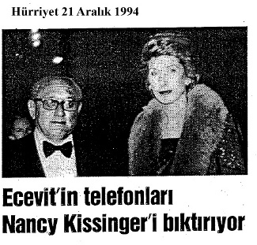

b- “ABD Venezuela’da para yağdırıyor”, 13 Eylül 2010
(http://haber.sol.org.tr/print/dunyadan/abd-venezuelada-muhaliflere-para-yagdiriyo-ha...).
c- “Chavez kapıdan kovdu, ABD bacadan sokacak”, 20
Şubat 2011 (http://haber.sol.org.tr/print/dunyadan/chavez-kapidan-kovdu -abd-bacadan-sokacak-ha...).
d- “Bizler mükemmel ikiyüzlüleriz”, 24 Şubat 2011
(http://haber.sol.org.tr/print/dunyadan/bizler-mukemmel-ikiyuzluleriz-haberi-39617).
(97) AID ya da USAID konusunu 1977 yılından beri yazılarımda, konferanslarımda ve sürekli açıklıyorum. Bu kitapta da AID’den söz ettim ancak ne yazık ki bu tehlikeli istihbarat örgütünü tanıtmayı beceremedim. Mısır’daki rejim değişikliğinde de AID karşımıza çıkıyor. Çünkü FM 31-16/Counterguerilla Operations (1967) adlı resmi ABD
talimnamesinde USAID’in yer aldığı açıkça görülüyor. (Bu sayfa orijinal haliyle kitaba eklendi.)
(98) “ABD siber aktivistleri Türkiye’de eğitiyor”, Taraf, 12
Nisan 2011.
(99) “İsyancıları ABD eğitmiş”, Milliyet, 16 Nisan 2011.
(100) a- “National Endowment for Democracy” (NED) Türkiye’de yıllardan beri başta Paul Henze (CIA ajanı) olmak üzere
ABD’lilerle
birlikte
Türkiye’nin
“federasyon”laştırılması için faaliyet gösteriyor. Yani Mısır’da olduğu gibi ülkemizde de olası bir başkaldırının fitilini ateşlemek için serbestçe faaliyetini sürdürmektedir. Bu işin içyüzü kitaplarda ayrıntılarıyla açıklanmış olmasına karşın iktidarların sessiz kalması ülkenin bölünme çabalarına katkı vermekle eşanlamlı sayılmalıdır.
b- Avrupa Birliği, Yılmaz Dikbaş, Asya Şafak Yayınları, 5.
baskı, 2007.
c- www.ned.org
(101) a- “International Republican Institute” (IRI) b- www.iri.org
(102) a- International Freedom Forum=IFI b- www.freedomhouse.org
(103) a- NED, IRI, IPI, vb. gibi “uluslararası örgütler”
Mısır’daki karşıdevrimde rol aldılarsa başta Türkiye olmak üzere dışarıdan beslenen işbirlikçiler ağının katkısıyla efendilerine biat etmeye devam ediyorlar. Bu hıyanetin işbirlikçilerini, örgütlerini nereden ne miktar beslendiklerini görmek, anlamak, mücadele etmek istiyorsanız bakınız: b- Sivil Örümceğin Ağında/Project Democracy, Mustafa Yıldırım, Ulusdağı Yayınları, Ankara, 2011.
c- Ortağın Çocukları, Mustafa Yıldırım, Ulusdağı Yayınları, Ankara, 2011.
(104) “Wikileaks kurucusu Assange, Facebook ve Google’ı CIA’yla çalışmakla suçladı. Facebook en korkunç casus aracı”, Söz gazetesi, Adana, Mayıs 2011, sayı 374.
(105) “Facebook bir şirketle anlaşıp google için kara propaganda yaptırmış – İnternette soğuk savaş”, Milliyet, 14
Mayıs 2011.
(106) a- 31, 32’de a.g.y. ve a.g.e.’ler
b- Taraf gazetesi 12-13 Mayıs 2011.
(107) Derin Devlet, Talat Turhan, İleri Yayınları, 2006.
(108) a- Mont Pelerin – Küresel Sermayenin Beyni, Talat Turhan-M.Eymen, İleri Yayınları, 2005.
b- 1’de a.g.e.
(109) “Savaşları ve yoksulluğu yok edecek Amerikan planı”, Yaman Törüner, 20 Nisan 2011.
(110) a- “İşgal öncesi petrol pazarlığı belgelendi”, Milliyet, 20 Nisan 2011.
b- “Petrol Coğrafyasında Şehir Devletleri”, 23 Şubat 2011
(http://haber.sol.org.tr/print/dunyadan/yazarlar/selim-yalciner/petrol-cografyasinda-sehir-devletle...).
c- “İngiliz Hükümeti ve Petrol Şirketleri Pazarlık Üstünde Yakalandı”,
20
Nisan
2011(http://haber.sol.org.tr/print/dunyadan/ingiliz-hukumetive-petrol-sirketleri-pazarlik-ust...).
d- “How to break up Big Oil”, Antonia Juhasz (http://ecobuddhism.org/solutions/gamechangers/bubo).
(111) “Hegomonya ve Petrol”, Mine G. Kırıkkanat, Radikal, 25 Ocak 2002.
(112) “Mısır Ordusunun içini oyup kim ‘kâğıttan kaplan’
yaptı? - Üniformalı müteahhitler”, Hürriyet, 13 Şubat 2011.
(113) a- “Kontrgerilla” ve “Gladio” türü CIA ve NATO
güdümlü yeraltı örgütlerinin ipliği pazara çıktığında “polis ve
istihbarat örgütleri”nden oluşan “paralel gizli servisler”
kurduğu görülüyor. Kurulan bu gizli örgütlere “polis Gladiosu” da denilebilir. Nitekim Ayaklanmaları Bastırma Hareketleri (Counter-Insurgency Warfare) adlı kitapta (Genelkurmay Basımevi, 1965, s. 104), “Mevcut polis teşkilatına itimat edilemiyorsa sırf bu maksat için yeni bir polis teşkilatı yaratılmalıdır” önerisi yer alıyor.
b- “Paralel ajanlar varmış / ABD’nin Norveç ve Almanya’da ayrı bir istihbarat örgütlenmesi yaptığı iddia edildi”, Osman Çutsay’ın haberi, Cumhuriyet, 7 Kasım 2010:
“Norveç’ten Almanya’ya sıçrayan hükümetlerin bilgisi dışında ABD temsilciliklerini koruma gerekçesiyle kurulduğu açıklanan yedek gizli servis birimleri Avrupa ülkelerini tedirgin etti...”
(114) (19)’da agg.
(115) a- NATO’nun Gizli Orduları, Daniele Ganser, Güncel Yayıncılık, 2005, s. 499.
b- L: Let
I: It
H: Happen
O:On
P: Purpos
c- 1’de a.g.y.
(116) a- “Arap Kaos’u istanbul’da Tezgâhlandı!”, Arslan Bulut, Yeniçağ, 25 Şubat 2011.
b- “Tayyip Bey’e 9 Soru!”, Arslan Bulut, Yeniçağ, 26 Şubat 2011.
c- “Tunus, Mısır, Libya, Asıl Darbe önce Türkiye’de Yapıldı”, Arslan Bulut, Yeniçağ, 27 Şubat 2011.
d- “İstanbul’da Kadife Devrim Toplantısı!”, Arslan Bulut, Yeniçağ, 29 Nisan 2011.
Arap Baharı ve Türkiye Enders Wimbush, Emiliano Alessandri*
(ABD German Marshall Fund direktörleri)
“Türk hükümetinden bu devrimlerin Türkiye’nin bölgedeki etkisi ve gücünü daha da artıracağı tahminlerini duyunca şaşırmıştım.
Türkiye o ülkeler için esin kaynağı olur. Bunda hiç kuşku yok. Ama bölgedeki o devrimler Türkiye’ye yeni fırsatlar doğururken çok ciddi tehditlere de maruz bırakır.”
* Leyla Tavşanoğlu’yla söyleşi, Cumhuriyet, 29 Mayıs 2011.

322 sayısının açılımı:
32, Kurukafa ve Kemikler Locası’nın kuruluş yılı olan 1832
sayısının son iki rakamını gösteriyor.
2 ise 1776 yılında Almanya’da kurulan Illuminati Mason Locası’nın
ikinci kez ABD’de S&B adıyla kurulmasını simgeliyor.
Yale Üniversitesinde bulunan Taş Mabet Skulls&Bones Society


İÇYÜZÜ
“İlk önce geldiler komünistleri alıp götürdüler, ben sesimi çıkarmadım. Beni ilgilendirmiyordu. Sonra Yahudileri aldılar toplama kamplarına, işkenceye götürdüler, ben yine sesimi çıkarmadım. Çünkü bana göre bir şey yoktu. Sonra sosyal demokratları vurmaya, hapse atmaya, toplama kamplarına götürmeye başladılar. Ben yine sesimi çıkarmadım.
Çünkü bana dokunan yoktu.
Bir gün kapım çalındı. Beni alıp toplama kampına götürdüler. İşkenceye... Hiç kimse ses çıkarmadı.
Çünkü ses çıkaracak kimse kalmamıştı...”
— 1986 yılında yayımladığım Bomba Davası adlı kitabımda kullandım.
— Günümüzde özellikle Şubat-Mart 2011’den beri bu slogan her platformda kullanılmaktadır.
TÜSİAD’ın girişimleri ve
12 Ekim 1996, Saat 14.00 Basın Müzesi Konferans Salonu
(Güncelleştirildi, 2011)
Türkiye Sanayici ve İşadamları Derneği (TÜSİAD) ile Kalite Derneği’nin (KALDER) ortaklaşa düzenledikleri ve 13-14 Kasım günleri yapılacak olan Kalite Kongresi’nin bu yılki baş konuğunun ABD dışişleri eski bakanı Henry Kissinger olacağı ve anılan kişinin hem kongrenin açılış
konuşmasını yapacağını, hem de “Siyasette Kirlenme ile Kaliteli Politikacı” konulu bir konferans vereceğini, buna karşılık 50.000 dolar ücret alacağını basından öğrenmiş
bulunuyorum.(1)
Aslında etkinliği düzenleyen örgütler ve katılımcılarıyla ilgili önyargı içinde bulunmadığımı vurgulamak isterim.
Kuşkusuz Kissinger(2) ABD ve dünya politikasına uzun süre damgasını vurmuş, yapıtlarındaki teorileri pratiğe geçirmiş, artıları olan bir kişiliktir. Ülkemizde gerek devlet adamlarından, gerek politikacılardan, gerekse Siyonist, masonik örgütlerden olağandışı ilgi görmeye devam etmektedir. Kissinger, 1994 yılında ülkemize geldiğinde yaptığı konuşmada, “Türkiye’nin ulusal çıkarlarının, Amerika’nın ulusal çıkarları ile çok yakın olduğu” şeklinde bir cümle kullanmıştır.(3) Oysaki emperyalist ülkeler ile diğer ülkelerin ulusal çıkarları genellikte zıttır. Örneğin Kissinger’ın dışişleri bakanı olduğu dönemde:
— Başkan Nixon’un baskıları sonucu haşhaş ekimi kaldırılmış, geçimini buradan sağlayan binlerce aile 12 Mart 1971 sonrası Nihat Erim’in Başbakanlığı döneminde ABD’nin insafına terk edilmiştir.(4)
— Kissinger’ın Kıbrıs’ta “Sampson Darbesi”nde rol üstlendiği açıklanmış(5) ve Kissinger Temsilciler Meclisi Komisyonu’nda belgelerin gizlenmesini sağlamıştır. (6) Mustafa Kemal’in, “tam bağımsız antiemperyalist ve antikapitalist” şiarının bir izleyicisi olarak Kissinger’ın Sampson darbesiyle ilgili tutumunu idam istemiyle yargılandığım İstanbul Sıkıyönetim Askeri Mahkemesi’ne bir dosyayla vermiş bulunuyorum. (7) Görüldüğü gibi antiemperyalist tavrım 36 yıl önce bu dosyayla sergilenmiştir.
— ABD’nin Körfez Savaşı’ndaki çıkarının ülkemizin çıkarı ile bütünüyle karşı olmasının sosyal, ekonomik, kültürel açmazını tüm ağırlığıyla duyumsarken bazı çevreler bu oluşumun baş sorumlusuna övgüler dizmeye devam etmektedir.
— “Çekiç Güç” ile ulusal çıkarlarımız arasındaki çelişkiyi merak edenlerin TBMM tutanak dergilerine bakmalarını öneririm. Örnekler sınırsız çoğaltılabilir. Ancak Kissinger’ın
“Türkiye ile ABD’nin çıkarlarının ortak olduğu” kanısı gerçeği yansıtmamaktadır. Peki, ülkemizi bu duruma kim getirdi? “Küçük Amerika”cılar diyeceğim.
1950’den 1996 yılına kadarki 46 yıllık süreçte çoğunlukla bu zihniyet iktidardadır. 12’li darbelerin bu anlayışa ivme kazandırmış olduğunu düşünüyorum. Küçük Amerikacı süreç iflas etmiştir, iktidarı yönetenler ülkenin çöktüğünü ilan
ediyorlar. Ama ana, bacı, bayrak, Kuran, ezan sloganlarının ardına sığınıp iktidarları sürdürebileceğini düşünme aymazlığı içinde laikliğe sahip çıkmak zorunda kalıyorlar. Nerede
“devrimcilik ve devletçilik” başta olmak üzere Atatürk’ün diğer yaşamsal ilkeleri? Onların böyle bir kaygısı yok, nitekim önceki koalisyonun Başbakanı T. Çiller geçen yıl
“son sosyalist devletini yıktık” diyerek aslında devletçilik ilkesini mezara gömdüğünü itiraf etmiştir. Yardımcısı Hikmet Çetin ise “çok istisnai durumlar dışında devletçilik geçerliğini yitirmiştir” diye ona destek vermiştir. “Karşılıklı bağımlılık”
söylemleri politikacılar tarafından yinelenmektedir. Serbest piyasa ekonomisine geçmemiz için 64 yıldır iktidarları sıkıştıran emperyalist güçler “borç batağı sarmalına”
doladıkları
ülkemizi
yalnız
bırakmakta
sakınca
görmemektedir... “Düşük yoğunluklu çatışma” doktriniyle dünyayı kan gölüne çevirenler 1962’li yıllarda Kennedy’nin kurumlaştırdığı “özel savaş” yöntemlerine başvuranlar silah tekellerinin değirmenine su taşıyıp iç savaşları kışkırtmada, ulusları birbirine kırdırmakta, “Yeni Dünya Düzeni”
söylemiyle emperyalist sömürülerine uygun bir oluşum yaratmaya çalışmaktadır. Bu ortamda ülkemizde, Latin Amerika, Vietnem, Kamboçya, Laos vb. ülkeler gibi işkence, gözaltında kayıp, yargısız infaz, darbe senaryoları gündeme gelmekte, devlet içinde mafyalar böyle bir ortamda sahneye çıkmakta, sorumlular olayları küçültmeye çalışmaktadır. 12
Mart 1971 sonrası bana, Tümgeneral Celil Gürkan’a ve binlerce yurtsevere işkence yapanların liderleri Org. Faik Türün ile Tümg. Memduh Ünlütürk idi. O dönemde bu konuda Parlamento’ya yaptığım yasal başvurudan sonuç almak şöyle dursun, tekke şeyhlerinden talimat alıp sıkıyönetimi idare eden kişi emekli olunca AP (Adalet Partisi)
tarafından Meclis’e taşınmış daha sonra da Cumhurbaşkanı adayı gösterilmiştir. “Komünizmin kökünü kazımak” savıyla işkence
uygulamasını
başlatanların
insan
hakları
kuruluşlarının eleştirilerine tepki vermeye nasıl hakları olabilir? Ülkemizin düzlüğe çıkarılması önkoşulunun 12’li darbelerden hesap sormaktan geçtiğine inanıyorum.(8-14) Bu kokuşma ve çürüme yıllardan beri kuşkuları artırmakta,
“Devleti ve ülkeyi kimler yönetiyor ve yönlendiriyor?”
sorusunu gündemde tutmaktadır.(15-38) Bu soruya verilen ortak yanıt,
— Devletin üzerinde devlet,
— Güç odakları,
— Karanlık güçler,
— Görünmeyen iktidar,
— Ordu,
— Yabancı devletler,
— İşadamları, iş çevreleri,
— Büyük şirketler,
— Mafya,
— Dış güçler tarafından yönetildiği tespitleridir, Demokrasinin vazgeçilmez unsuru olan siyasi partiler, iktidarlar, başbakanlar halkın güvenini yitirmektedir. Yapılan bir kamuoyu araştırmasında “Türk halkının” yüzde 65’inin Türk Silahlı Kuvvetleri’ne güvendiğini göstermektedir.
Kuşkusuz Türk Silahlı Kuvvetleri’ne güvenilmesine seviniriz, ancak madalyonun öteki yüzüne baktığımızda bu olgunun darbe olasılığını artırabileceğini göz ardı etmememiz gerekir.
(39) Şimdi dünyada birçok ülkede, özellikle Şili’de darbelere bulaştığı savlanan Henry Kissinger’a geçebiliriz.
Yazılanlara bakılırsa Nixon özellikle seçim dönemlerinde
“çokuluslu şirketlerle” alışveriş içinde bulunan düzenbaz pragmatik ABD yanlısı darbelerden yana, mafyayla ilişkili bir kişiydi. Bir mafya patronunu affetmiş...(40) Nixon kendi adıyla anılan bir doktrine imzasını atmış, Vietnam’laştırmanın mimarı olmuş ve “profesyonel ordu”
kavramını benimsemiştir. Bu anlayışa göre, ABD askeri yerine kiralık askerlerle ya da CIA ajanlarıyla halklar birbirine düşürülmektedir.(41–42) Aslında özellikle İkinci Dünya Savaşı’ndan sonra “kurtuluş savaşlarını bastırma ve komünizmi engelleme” gibi gerekçelerin ardına sığınma daha eski tarihlere uzanmaktadır.(43) Ve sonuçta Nixon dönemi
“Watergate” rezaletiyle noktalanmış, suçluluğu karara bağlanmıştır. Yerine gelen Başkan Gerald Ford onu affetmiştir. Nixon, “Watergate aptalca bir hataydı” cümlesiyle suçunu kabullenmiş,(44) Watergate Savcısı Leon Avvorky yaptığı konuşmada,(45) “O (Nixon) kendisinden önce hiçbir başkanın olamadığı derecede küçük düşmüş ve aşağılanmıştır.
Bu şimdiye kadar hiçbir başkanın yaşamadığı bir utanç olmuştur. Hayatının geri kalan bölümünde bundan nasıl kurtulabileceğini merak ediyorum. Affı kabulü, suçluluğunu da kabul ettiğini kanıtlamaktadır” demektedir...
Nixon’un “high profile’ini bir de ABD eski başkanı Harry Truman’ın açıklamasıyla pekiştirmek istiyorum.(46)
“Nixon, Allahın cezası, malın gözü, yalancının biridir ve halk da bunu bilir. Nasıl olup da 1960’ta seçilmeye o denli yaklaşabildiğini anlayamıyorum. Nixon’un değiştiğini söylüyorlar, ama bunu bana ispat etmeleri gerekir!”
Nixon, kendisini aptallıkla suçlarken, H. Truman ise onu yalancılıkla suçlamaktadır. Bu adamın yanında akıllı bir ikinci adama gereksinim vardır. O kişi uzun süre bu görev için hazırlanmış bir istihbaratçıdır. Biliyorsunuz İngilizcede
“intelligence” hem “istihbarat” hem de “akıl” anlamına gelmektedir.
CIA ajanı Victor Marchetti konuya açıklık getirmektedir:(47)
“—Soru: Sonunda sizi nereye gönderdiler?
— Cevap: Oberammergau’ya(48) dil öğrenmeye harika bir yerdi doğrusu. Orada Rusça ile istihbarat görevinin temel ilkelerini öğrendim.
— Soru: Neden, hemen başlangıçta sizi istihbarat servisine göndermişlerdi?
— Cevap: Başlangıçta sizi bir teste tabi tutarlar, eğer 50
puandan aşağı alırsanız basit bir er bile olamazsınız, 50’den yukarısı er olmak için yeterlidir. 90-100 subaylık için yeterli düzeydir, 110’dan yukarısı ise çok zeki olduğunuzu gösterir.
Sizi istihbarata gönderirler, yanılmıyorsam ben 148-149 puan almıştım.(49)
— Soru: Tamam sanıyorum, İkinci Dünya Savaşı sonrasında Henry Kissinger adında birinin başından da aynı şeyler geçmişti.
— Cevap: Evet o, Oberammergau okulunda hocaydı.”
H. Kissinger gerek istihbaratçılıkta, gerek politikadaki becerilerinde teste tabi tutulsa en yüksek puanı alır. Onun bu niteliği sürekli ABD emperyalizminin ve Siyonizm’in çıkarına, diğer ülkelerin aleyhine işlemiştir. Nixon-Kissinger ikilisinin dönemi bir yapıtta NIXINGIR şeklinde tanımlanmaktadır. Çünkü çok zeki olan Kissinger, iktidarın dizginlerini ele almıştır. Bu nedenle kendisine Rasputin ve Metternich benzetmesi yapılmaktadır.(50)
O, başkanın danışmanı olmuştur. Aynı zamanda NSC
(National Security Council [Milli Güvenlik Kurulu]) başkanıdır. 40’lar Komitesi’ne Başkanlık yapmaktadır ve de dışişleri bakanıdır,(51) ClA’nın tüm “gizli operasyonlarından”
haberi vardır. Başkanın onayıyla bu operasyonlar düzenlenmektedir.
Bu noktada konuya aydınlık getirmek için bu operasyonların içeriğine bakmamız gerekecek. ABD’den ve Nixon-Kissinger döneminden sayısız örnekler verilebilir. Eski CIA ajanı Victor Marchetti’nin nitelemesiyle “iktidar delisi, Kissinger” amacının doruğundadır...(52) Krallara bile nasip olmamış iktidar gücü artık avuçlarındadır...
CIA’nın Gizli Operasyonları(53)
— Yabancı ülkelerin politikalarına yön vermek (seçimlerde hile yapmak).
— Devlet memurlarına rüşvet vermek.
— Bazı sendikaları ve siyası partileri desteklerken diğerlerini ezmek.
— Kasıtlı yanlış bilgilendirme yapmak ve propaganda kampanyaları düzenlemek.
— Yabancı askeri ve milis kuvvetlerini desteklemek ve eğitmek.
— Yabancı devlet başkanlarına karşı suikastlar düzenlemek ya da bu kişilerin öldürülmesini sağlamak.
— Demokratik seçimle başa geçmiş hükümetlerin destabilizasyonunu ve devrilmesini sağlamak. (54)
— Dış ülkelerin güvenlik güçlerini en modern sorgulama, gözleme ve işkence yöntemleri konusunda eğitmek,
— Uyuşturucu, hipnotizma, elektroşok ve beyin yıkama yoluyla zihni kontrol altında tutma deneyleri (MK-ULTRA) yapmak.
— ABD halkını gözetlemek ve taciz etmek.
NSC-CIA ilişkileri “The CIA and Desision Making” başlıklı makalede ayrıntılarıyla belirtilmiş ve Kissinger’ın durumu açıklanmıştır.(55)
Tüm iktidar gücünü eline geçiren bu kişinin neden başkanlığa oynamadığı düşünülebilir. Çünkü ABD yasaları gereğince ABD’de doğmamış kişilerin başkan olma hakkı yoktur. Bu durum Kissinger’ın daha da işine gelmiş, bu sayede sorumluluktan kurtulmasını becerebilmiştir. Aslında o, Nixon’un bütün suçlarının en azından manen birinci derecede ortağıdır.
Şimdi biyografisine bakıp çocukluk yıllarına, ABD’ye Almanya’dan göçüşüne, özellikle istihbaratçılık yönüne göz atalım. Yerli ve yabancı tüm ansiklopedilerde bir görünmez elin onun bu yönünü özenle gizlemeye çalıştığını görüyoruz.
(56-59) Henry Kissinger’ın istihbaratçılık yönü iki yapıtta ayrıntılarıyla açıklanmaktadır.(60-61)
Henry Kissinger 1923 yılında Almanya’da Fürth kentinde Yahudi asıllı bir ailenin çocuğu olarak dünyaya geldi.
Babasının önsezisi sonucu İkinci Dünya Savaşı’ndan bir yıl önce 1938’de ABD’ye göç etti. 1938-1943 arası evrede vatandaşlığa alınmadıkları için, ABD’de ailece zor anlar yaşadılar. Anne Kissinger aşçılık yaparak ailenin geçimini sağlamaya çalıştı.
1943 yılında ABD vatandaşı olur olmaz Kissinger’ın istihbaratçılıkta yıldızının parladığını görüyoruz. Bu arada
“süper star”lığa soyunmuş olacak ki Heinz olan ilk ismini Henry’ye çevirip Alman imajını silmeye çalıştı.
1943 yılında asker olunca “Pentagon Şifre Servisi”nde, 1943-1946 arasında Amerikan Ordusu karşı casusluk bölümünde görev aldı ve yüzbaşı rütbesine kadar yükseldi.
1945 yılında onu Gürcistan’da görüyoruz. “Camp Gordon’da”
Alman esirlerin sorgulanmasında görev aldı. Esir sorgulaması
“teknik sorgulama” diye de tanımlanmaktadır. Bu tip sorgulamanın nasıl bir şey olduğunu “Ziverbey (Zihni Paşa) İşkence Köşkü” ve benzeri yerlerden geçenler iliklerine kadar duyumsamışlardır.(62–63) Kaldı ki Kissinger, zamanında ABD’ye göç etmiş olmasaydı büyük bir olasılıkla “Dachau Toplama Kampının Krematoryumunda” yakılmış olacaktı.(64)
Alman esirlerini sorgularken bu kininden soyutlandığını düşünmek akla uygun düşmez...
Gürcistan’daki görevinde üstün başarı göstermiş olmalı ki Almanya’nın Krefeld kentinde bulunan 84. ABD Tümeni’nde bir süre komutan tercümanı olarak çalıştı, daha sonra Krefelt yönetiminin düzenlenmesi görevi Kissinger’a verildi. Bu görevi sürdürürken kendi bölgesinde gerek gördüğü hallerde Alman sivil ve askerlerini gözaltına almak yetkisiyle donatıldı: 22-23 yaşlarındaydı...
Aslında, ABD resmi talimnamelerinde FM 41 simgeli(65) olanlar ile işgal edilen bir bölgenin yeniden düzenlenmesi
“Kontrgerilla Harekâtı” kapsamı içerisine girmektedir.(66) Krefelt’den sonra onu Oberammergau’da görüyoruz.(67) Münih’in güneyindeki bu şirin yerleşim biriminde hem ABD’ye hem NATO’ya bağlı ve CIA denetiminde,
— Ayaklanmaları Bastırma Okulu,
— İstihbarat Okulu bulunmaktadır.
Kissinger, Oberammergau’daki “European Command Intelligence School’da” (Avrupa Komutanlığı İstihbarat Okulu) Alman tarihi doçenti sıfatıyla öğretmenlik yaptı.(68) Basında yıllardan beri bu okullarla ilgili haberler yer almaktadır. “Les Escaudes Dela Americas”, “School of Americas” adlı bu okullara, “Darbeci Okulları, Kontrgerilla Okulları, Cinayet Okulları, İşkenceci Yetiştiren Okullar” da denilmektedir. Başlangıçta (1946) Panama’da bulunan Okul yılında ABD’de Fort Benning kentine taşınmıştır (1984). En
büyüğü de “J. F. Kennedy Özel Savaş Okulu” olup, ABD’de Fort BRAGG’da bulunmaktadır.
Latin Amerika’nın tüm darbecileri, işkencecileri ve katilleri bu okullardan yetişmişlerdir. Avrupa ayağı Brüksel’de NATO
karargâhında
(SHAPE)
ACC
(Allied
Coordination
Commitee) Müttefik Koordinasyon Komitesine de bağlı olarak Oberammergau’da çalışmalarını sürdürmektedir. (69) Kissinger, 1950 Yılında “Consultant Operation Research Office”e alınmış, daha sonra da 1952-1953 yıllarında
“psikolojik strateji” uzmanlığı yapmıştır.(70) Psikolojik savaş, özel savaşın bir bölümünü oluşturmaktadır.
Henry Kissinger, aralıklarla Harvard Üniversitesi’nde çalışmalarını sürdürmüş, istihbarat üzerine araştırmalarını yoğunlaştırmış, bu üniversitede profesörlüğe yükselmiştir.
Özellikle üniversite “Savunma Çalışmaları” programına (1958-1971)
katılmış,
1956-1960
arasında
ABD
Genelkurmayı’nda görev almıştır. 1958 yılında uygulamadaki istihbarat bilgi birikimini bir grup öğretim görevlisiyle kuramlaştırmış ve “Counter-lnsurgency Warfare/Theory and Practice”
adlı
yapıtı
yayınlamıştır.(71)
Kissinger’ın
oluşmasında
katkısı
bulunan
yapıt,
1965
yılında
Ayaklanmaları Bastırma Hareketleri adıyla Genelkurmay Başkanlığımızca yayınlanmış, Kissinger’ın ismi gizlenmiştir.
(72) Yapıtta yer alan öneriler anayasal düzenimizle bağdaşmamaktadır. Ancak 12 Mart 1971 ve 12 Eylül 1980
darbelerinde bu yapıt geniş ölçüde uygulamaya konulmuş ve darbecileri yönlendirmiştir.
Kissinger aynı anda birkaç görev üstlenecek kadar yetenekli bir istihbaratçıdır. Bu niteliğiyle Rockefeller Vakfı’nda da görev almıştır (1956-1958). Rockefeller’le tanışması onun politikaya atılmasında etken olmuştur. Aslında Nixon’da Rockefeller’le içli dışlı olduğu için, Kissinger’ın NSC
başkanlığına getirilmesini sağlamıştır. Buna karşılık Rockefeller’in adamlarını emrine almış, daha sonra dışişleri bakanı olmuştur. Bu görevde iken Nixon’un para karşılığı büyükelçi atamasına göz yummuştur.(73) Yaşamı boyunca da Rockefeller’in yanında yer almış “küreselleşme”ye yön vermiştir.
İzninizle bu ikiliyi tamamlamak için bir üçüncü kişiyi devreye sokup bir “triumvira” kuralım. Bu kişi Alexander Haig’dir.(74) Kissinger adlı yapıtla A. Haig’in Vietnam, başta olmak üzere ABD’nin tüm kanlı girişimlerde yer aldığı ve Beyaz Saray - ordu ve ordu istihbaratı konusunda topladığı bilgileri Kissinger’a aktardığı savlanmaktadır. A. Haig tümgeneral rütbesiyle dışişleri bakan yardımcısı olmuş, üçlü tamamlanmıştır. A. Haig, NATO Başkomutanlığı döneminde Kenan Evren’le dostluk kurmuş ve bir solukta Ege Denizi’ndeki ulusal çıkarlarımızdan Yunanistan lehine vazgeçilmesini sağlamıştır.(75)
Kissinger’ı, Şili’deki seçimlerde Allende’nin iktidara gelmesini engelleme girişimleri içinde görüyoruz.(76) Les Complots dela CIA adlı yapıtın birinci bölümde (s. 17-98) Amerikan Senatosu Araştırma Komisyonu Raporunda (Church raporu) 40’lar Komitesi başkanı olarak Kissinger’ın CIA’nın
eylemlerini
denetlediği
ve
yönlendirdiği
açıklanmaktadır.
Şili’deki Gizli Operasyonlar
TRAK I ve TRAK II şeklinde kodlanmış.
—TRAK I: Allende’nin iktidara gelişini engelleme.
—TRAK II: Allende’nin darbe ile düşürülmesini öngörme.
TRAK I operasyonu için 40’lar Komitesi onay vermiş, operasyonlar gereği önce Şili Genelkurmay Başkanı Gen.
Schneider öldürülmüştür. CIA, Şili’deki Amerikancı parti başkanı Frei’le işbirliği halinde, ekonomik baskı ve destabilizasyon (istikrarsız hale getirme) sonucu Şili Ordusu’nun iktidara el koymasını da planlamış ve uygulamıştır.
Bu
amaçla
Şili’de
Allende
karşıtı
parlamenterlere ve askerlere 250.000 dolar dağıtılmıştır ve bu işlevi AID üstlenmiştir.(77)
Church’ın raporunda Kissinger TRAK l’den haberli olduğunu kabul etmiş TRAK ll’yi “hatırlamıyorum” diyerek geçiştirmiştir.
Bu resmi raporu destekleyen yapıtlarda CIA-ITT ilişkisiyle olgunlaştırma “gizli operasyonlarda” Kissinger ile ITT şirketi yetkilileri arasındaki mektuplaşmalara yer verilmektedir.
ITT’nin başkanlığını CIA eski başkanlarından Mc Cone yapmaktadır. Başkandan, 40’lar Komitesine, oradan ITT’ye (çokuluslu Şirket), CIA’dan AID’ye, oradan Şili’deki işbirlikçilere kadar uzanan iğrenç bir senaryo... Küçük Amerikacılara sunulur. Şili darbesi birçok yapıta konu olmuştur.(78)
ABD demokrasi ve özgürlük şampiyonluğunu kimseye bırakmıyor ama çıkarı tehlikeye düştüğünde en iğrenç
yöntemlere başvurmaktan çekinmemektedir. Son örneğini Kuzey Irak’taki CIA operasyonunda ve Afganistan’da görmemiz şaşırtıcı olmamıştır. Basında Kissinger’la ilgili savlar yer almıştır:
— Eski bir CIA ajanının açıklaması: Kissinger CIA’ya Allende’yi devirmesini emretti.(79)
— Kissinger, CIA’dan Allende’yi devirmesini istemiş.(80)
— İran şahı ile Kissinger’ın yakın ilişkileri olduğu açıklandı.(81)
— Kissinger’ın Kıbrıs’taki Sampson darbesindeki rolüne ilişkin savları daha önce açıklamıştım.
— Devlet liderleri için “vur emrini” Kissinger ve CIA başkanları vermiş.(82)
— CIA’nın suikastlarına NATO Başkomutanı Haig’in de adı karıştı.(83)
— Time Magazine ABD’deki suikastları açıkladı. Eski başkan Johnson’a göre CIA bir cinayet şebekesi imiş.(84)
— Kissinger: “ABD, Angola’ya müdahale hakkına sahiptir.
Büyük devletler çıkarları olduğu bölgelere müdahale etmezlerse büyüklüklerini koruyamazlar.” (85)
— NATO Genel Sekreteri Josef Luns: “Kissinger silahlı müdahale ilgili görüşünde haklı.” (86)
— ABD Başkanı Gerald Ford: “Ortadoğu’ya silahlı müdahalede bulunabiliriz”. (87)
— Rockefeller raporuna göre, Nixon örgütü iç politika çekişmelerine alet etti: “CIA 20 yıldan beri yasaları çiğnedi.” (88)
— CIA Başkanı W. Colby: “ABD çıkarları açısından gerekli görürse dünyanın her yerine müdahale eder.” (89)
— CIA Başkanı George Bush: “Yabancı ülkelerde darbe düzenlemekten yanayım.” (90)
Kissinger Yugoslavya’yı Nasıl Parçaladı
“Lawrence Eagleburger’in Türkiye’de PTT’nin T’sinin özelleştirmesiyle ilgilendiği Amerikan basınında yer aldı.
Kissinger’a ait bir firma olan ‘Kent Associates’, ‘Teletaş’
hisselerinin yüzde 38’inin ‘Bell Telephone’ tarafından alınmasında aracılık ederken Eagleburger de bu işe bulaşmıştı.” (91)
Gündüz Vassaf’ın bu yıl yayınladığı Cennetin Dibi adlı yapıtın tanıtımı bir gazetede yayınlandı.(92) Yapıtta Kissinger’e yönelik yeni suçlamalar yer almaktadır.
Kissinger’ın sıradan bir katilden daha suçlu olabileceğini hiç düşünmüş müydünüz? Kissinger’ın gün ışığına çıkan suçları arasında:
—Yahya Han’ın desteklenmesiyle Bangladeş halkının soykırıma uğratılması,
—Allende iktidarının devrilip Şili halkının zindanlarda yok olması,
—Yunan cuntasının yaptığı darbenin desteklenmesi ve darbe başarısız olunca iki halkın birbirine düşürülmesi,
— Doğu Timor Adaları nüfusunun üçte birinin katledilmesini desteklemesi,
— Mossad’la işbirliği yaparak Kürtleri “kazanacak kadar değil savaşacak kadar” ayakta tutup İran-Irak antlaşması sonucu katledilmelerine onay vermesi bulunuyor.
ABD emperyalizminin zorbalığını Prof. Noam Chomsky
“beşinci özgürlük “kavramayla açıklamaktadır.(93) Beşinci Özgürlük
Roosevelt’in öne sürdüğü “yaşama”, “konuşma”, “ibadet”,
“yaratma” özgürlüklerine N. Chomsky ekleme yapıp, ABD’nin şiddet politikasına ışık tutmaktadır.
— “Soyma”, “sömürme”, “hüküm altına alma”, “güce başvurma”.
ABD’li bir bilim adamı olan N. Chomsky’nin düşüncesi ABD saldırganlığıyla da doğrulanmaktadır.
Yapıtlarımda bir ABD talimnamesine gönderme yapıp darbe sonrası düzenlenen Temizlik Operasyonu’nda, Ticaret ve Sanayi Odaları ile diğer ticari ilişkilerin temsilcilerine görev verildiğini açıklıyorum. Bunun gibi bir darbe içinde CIA ve AID’nin de yer aldığını belirtiyorum.(94-96) Şili darbesinde de rol alan ABD’nin çok yönlü ve tehlikeli casusluk örgütü olan AID’nin kullanıldığı görülüyor.
AID’nin ülkemizde özel sektörü krediyle destekleyen bir bankada hissesi bulunmaktadır...
Bir bankadan, özel sektöre, oradan AID ve CIA’ya uzanan ilişkiler yumağı... Bozuk, kirli, mafyalaşmış “Gladio düzenleri” emperyalist ülkelerle işbirliği yapıp “küresel çete”nin değirmenine su taşıyorlar...
Sanıyorum Kissinger’ın içyüzünü yeterince açıklamış
bulunuyorum.
Önerilerim
1- Onu davet eden örgütler savlarımın geçersizliğini kanıtlamak zorundadırlar...
2- Eğer bunu yapamazlarsa Kissinger’la aynı konuma düşmemek için bu kişiye yapılan daveti iptal etme durumundadırlar.
3- TÜSİAD’ın etkinliğine katılacağı açıklanan(97) kişilerden bazıları kongreye katılmaktan vazgeçmelidir.
4- Bu kişiyle ilişki sürdüren politikacılar geçmişteki davranışlarını sorgulamalı ve “ABD vatandaşlarınca gerçek bir casusluk romanının kahramanı olarak nitelenen”(98) Kissinger’le ilişkilerini kesmelidir.
5- Bu kişiden “siyasette kalite” dersi almaya kalkışmanın halkımıza yapılan en büyük saygısızlık olacağı inancıyla 13-14 Kasım’a (1996) kadar geçen süre içerisinde Amerikanofiller dışında tüm demokratik kitle örgütlerini, siyasal partileri ve medyayı Kissinger’ın kişiliğinde antiemperyalist bir kampanyaya çağırıyorum.
Teşekkürlerimle saygılarımı sunuyorum.
Kaynakça ve Açıklamalar (1) Milliyet, 17 Eylül 1996.
(2) Sabah, 14 Eylül 1994, Sedat Sertoğlu: “Çiller Dr.
Kissinger, Ertegün Komili ve...”
a- Turgut Özal’la ilişki, Hürriyet: Nisan 1992: “Bu fotoğraf konuşulur.”
b- Bülent Ecevit’le ilişki, Hürriyet: 21 Aralık 1994.
(Ecevit’in telefonları Nancy Kissinger’ı bıktırıyor: “Savaş
yapacaksa yapasın yeter ki uyuyayım.”)
c- Tansu Çiller’le ilişki, Sabah, 14 Eylül 1994, Leyla Umar’ın haberi: “Kissinger bedava danışman... Kissinger’e büyük ilgi...”
— Sabah, 13 Eylül 1994: “Kissinger’li tekke açılışı...” y.n.: Üsküdar’daki Özbekler Tekkesi.
— Milliyet, 25 Eylül 1996: “Kissinger gönüllü lobici...”
— Milliyet, 26 Eylül 1996: “Çiller’den Kissinger’a sır bavullar...” y.n.: New York’ta verildi.
— Milliyet, 7 Ekim 1996 “Kissinger: ‘Çiller Saddamcı!’”
d- Süleyman Demirel’le ilişki: Hürriyet, 6 Nisan 1995:
“Demirel, içini Kissinger’a döktü. Demirel, Kissinger’la çok eskiye dayanan dostlukları bulunduğunu belirterek,
‘Türkiye’ye gel, çok önemli konular var konuşalım’ dediğini bildirdi. Demirel, Kissinger’ın da, ekim ayında ABD gezisi
sırasında kendisini evinde ağırlamak istediğini söylediğini bildirdi.”
y.n.: Konuşma, cumhurbaşkanının Arjantin ziyareti sırasında yapılmıştır,
e- Basından bazı örnekler: Sabah, 12 Eylül 1994, Mehmet Barlas: “Diplomasinin pratisyeni ve teorisyeni Kissinger!..”
f- “Erdoğan’ın Kissinger ve Yahudilerle görüşmesi”, 20
Aralık 2006 (güncelleme).
(3) Sabah, 14 Eylül 1994, Cengiz Çandar: “Henry Kissinsger’la 21. yüzyıla seyahat...”
(4) Milliyet, 24 Mart 1976, Turhan, Bilgin 12 Mart’ın getirdiği... Hükümet’in aldığı ilk karar, haşhaşın ekimini, yasaklamak oldu. Nixon, Erim’in davranışını ‘cesur ve devlet adamı niteliğine
yakışır bir tutum’ olarak tanımladı.”
y.n.: Oysa Süleyman Demirel başbakanlığı döneminde bu öneriyi geri çevirmiştir.
y.n.: 12 Mart darbesinin ardında CIA’nın bulunduğu açıklanmıştır.
a- Politika, 12 Mart 1976 Dışişleri eski bakanı İhsan Sabri Çağlayangil: “12 Mart’ta büyük ölçüde CIA vardır.”
b- Cumhuriyet, 26 Mart 1976, Uğur Mumcu: “Kim kimi doğruluyor...”
y.n.: O dönemde Kissinger, 40’lar Komitesi’ne de başkanlık yapıyordu ve de CIA bu komiteye bağlı bulunuyordu.
(5) Cumhuriyet, 27 Mart 1975: “Bir CIA ajanının İtirafları...Victor Marcetti: ‘İktidar delisi Kissinger, Kıbrıs’ta Sampson iktidara gelsin, istikrar olur diye düşünmüştü.’”
y.n.: Nitekim daha sonra Temsilciler Meclisi’nde bu konudaki belgelerin açıklamasını engelleyip üzerindeki kuşkuları yoğunlaştırmıştır.
(6) Dünya, 23 Ekim 1975: “Kissinger’ın isteği kabul edildi Kıbrıs’a ait belgeler komisyona verilmiyor.”
(7) Talat Turhan’ın savunması, 8. klasör (yayımlanmadı).
(8) Özel Savaş Terör ve Kontrgerilla, Talat Turhan, 1. baskı, Mart 1992.
(9) Kontrgerilla Cumhuriyeti, Talat Turhan, 1. baskı, Mart 1993.
(10) FM 100-20 Low intersty Confilt, resmi ABD
talimnamesi.
(11) Güneydoğu’da Düşük Yoğunluklu Çatışma, Mehmet Ali Kışlalı, Ümit Yayıncılık, 1. baskı, Ağustos 1996.
(12) “İşkence, Siyasi Cinayetler ve Güvenlik Örgütleri”
Talat Turhan, 7 Gün (haftalık siyasi dergi), 10 Mayıs-27
Temmuz 1977. (226 kaynağa gönderme yapılmıştır) (13) “İktidarların Çeteleşmesi ve Bürokrasi”, Talat Turhan, 7 Gün, 3 Ağustos-21 Aralık 1977. (163 kaynağa gönderme yapılmıştır ve dizi tamamlanmadan dergi yayını kesilmiştir.) (14) Talat Turhan’ın savunması, 10 klasör, 4.283 sayfa.
(1975’te ilk iki klasörün özeti yayımlanmıştır.) a- Bomba Davası/Savunma-1, Talat Turhan, kendi yayını, 2.
baskı, Şubat 1986.
b- Bomba Davası/Savunma-2 İşkence’-Talat Turhan- kendi yayınım-birinci baskı, 1986.
c- TBMM Faili Meçhul Siyasi Cinayetler Meclis Araştırma Komisyonu Raporu. Dönem:19, yasama yılı: 5, s. sayısı: 897, 1995 (Yapıtlarıma gönderme yapmaktadır.)
(15) “İç politikayı dışarıdan esen rüzgârlar yönlendiriyor”, Milliyet, 3 Ekim 1987.
(16) “Kurumların güvenilirlik derecesi”, Hürriyet, 20 Ekim 1994.
(17) “İttihat Terraki benzeri bir örgüt (yönetiyor)”, Mahir Kaynak, Aktüel, 16 Kasım 1994.
(18) “Ülkeyi holdingler yönetiyor”, Prof. Dr. İzzettin Önder, Zaman, 14 Ocak 1995.
(19) “Türkiye’yi bir haydut çetesi yönetiyor”, ABD Senatör Alfonse D’Amato, Milliyet, 23 Mart 1995
(20) “Ülkeyi istihbarat örgütleri yönetiyor”, Talat Turhan, Selam, 17-23 Nisan 1995.
(21) “Türkiye’yi IMF ve Dünya Bankası yönetiyor”, Selam, 17-23 Nisan 1995.
(22) “Medya istihbarat örgütlerinin yönlendirmesine direnmeli”, Fehmi Koru, Selam, 24-30 Nisan 1995.
(23) “Türkiye’yi PKK mı Yönetiyor?”, Ahmet Altan, Yeni Yüzyıl, 16 Mayıs 1995.
(24) “Devlette gizli örgüt yapılanıyor”, Sadık Avundukoğlu, Cumhuriyet, 21 Mayıs 1995.
(25) “Çağımızda iktidar ulusal hükümetlerden tüm bölgeye yayılan
çokuluslu
şirketlerin
tekeline
geçiyor”,
Newsweek’ten aktaran Cumhuriyet, 21 Haziran 1995.
(26) “Silahlı Kuvvetler, güvenlik güçleri ve istihbarat örgütlerinin hükümeti olduğumuzdan kuşku taşıdığımı itiraf ediyorum”. CHP Grup Başkanvekili Mehmet Kerimoğlu, Siyah Beyaz, 4 Eylül 1995
(27) “Ülkeyi iki Amerikalı yönetiyor”, Hüsamettin Cindoruk, Cumhuriyet, 24 Ekim 1995.
(28) “Dışarıdan yönetiliyoruz”, Bülent Ecevit, Cumhuriyet, 28 Aralık 1995.
(29) “Politikayı sermaye yönlendiriyor”, Ümit Aktaş, Selam, 3-9 Haziran 1996.
(30) “Ülkeyi ordu, mafya, iş çevreleri, dış güçler yönetiyor”, ANAP Milletvekili Korkut Özal, Milliyet, 23
Haziran 1996.
(31) “Uluslararası Af Örgütü Raporu: 1960’tan bu yana seçimlerle iş başına gelen hükümetlerin ‘seçimle gelmeyen bir gücün gölgesinde’ bulunduğu... ‘Bu güç İçişleri ve Savunma Bakanlıklarındaki bir takım unsurlardan, valilerden ve güvenlik güçlerinden oluşan devlet içinde devlet’tir’”, Evren Değer’in haberi, Milliyet, 29 Eylül 1996.
(32) “İmam-hatipliler devleti yönetiyor”, RP Milletvekili Ramazan Yenidede, Milliyet, 1 Ekim 1996.
(33) 2 b’de a.g.g.
(34) 2 c’de a.g.g.
(35) 2 e’de a.g.g.
(36) 2 e’de a.g.g.
(37) 2 d’de a.g.g.
(38) “Erdoğan, Kissinger ve Yahudilerle görüştü”, http://www.haber10.com/haber/53352 (20 Aralık 2006).
(39) Hürriyet, 19 Ekim 1994- “Türk halkı kime Güveniyor?”
(40) Kirli İşler İmparatorlukları, Ovid Demaris, Koza Yayınları, 1976.
y.n.: Nixon’un kanser nedeniyle affettiği mafya patronu olayını Adalet Bakanlığı ve FBI hayretle karşılamaktadır.
Daha sonra bu kişi bir TV kanalına çıkartılıp Nixon’u övmüştür.
(41) Evrensel Soygun Çokuluslu Şirketlerin Gücü, Richard Barnet, Ronald E. Müller, 1976.
(42) “Büyümenin Ekonomik Politiği”, New York Herald Tribüne, 5 Haziran 1950.
(43) Time’dan aktaran: Cumhuriyet, 21 Ocak 1976 CIA eski Başkanı Colby: ‘ Vietnam’da giriştiğimiz Phoneix harekâtında 20.000 kişi öldü.’”
(44) Dünya, 24 Ekim 1975: (Savunmamın 8’inci klasörüne eklenip İstanbul Sıkıyönetim Askeri Mahkemesi’ne verilmiştir.)
(45) Yeni Ortam, 25 Ekim 1975.
(46) 40’ta a.g.y., s. 395.
(47) Cumhuriyet, 25 Mart 1975.
(48) Almanya’da bu yerleşim biriminde NATO’ya bağlı
“İstihbarat Okulu” bulunuyor.
(49) Clinton’un IQ’su 180, oğul Bush’un 90...
(50) a- Kissinger-Superstar-Charles Ashman, Presse de la Cité-Paris, 1973: “Le Titre Original de cet Ouvrage est:
Kissinger, The Adventures Of Super-KRANT Traduit de I
‘American par Renzud Bombard.”
b- 40’ta a.g.y.
(51) ABD’deki tüm istihbarat örgütleri bu komiteye bağlı olup CIA’nın bütün gizli operasyonları Kissinger’ın denetimine geçmiştir.
(52) 5’te a.g.g.
(53) “From Don Ethan Miller’s The Book of Jargon”, Collier Books, New York’tan aktaran: Çeviri dergisi, yıl 2, sayı 2, Nisan 1988.
(54) Askeri darbe düzenlemek.
(55) “Foreign Affair”, cilt 50, no. 2, Ocak 1972, “The CIA And Decision-Making-M”, Chester L. Cooper s. 228.
(56) Büyük Larousse s. 6812.
(57) Ana Britannica, cilt 13, s. 360: “Kissinger Henry (Alfred), İkinci Dünya Savaşı sırasında ABD Kara Kuvvetleri’nde, savaştan sonra da Almanya’daki askeri yönetimde görev yaptı.”
(58) Encyclopadia Americana, cilt 16, s. 462.
(59) Eneyelopedia of modern war, s. 92.
(60) 50’de a.g.y.
(61) The International Who’s Who, 1978-79, s. 895.
(62) 14 b’de a.g.y.
(63) Ziverbey Köşkü, İlhan Selçuk, Çağdaş Yayınları.
(64) Le Camp de Concentration de Dachau 1933-1945.
(65) Örneğin, FM 41-10 simgeli resmi ABD
talimnamesinde adı: “Civil Affairs Operations”tır.
(66) Yapıtlarımda kamuoyuna açıkladığım FM 31-16
simgeli Counter Guerilla Operations adlı resmi ABD
talimnamesinin simgesi FM 90-8 olarak değiştirilmiştir.
(67) 5’te a.g.g.
(68) Gladio (Kontrgerilla) Soğuk Savaşın Mirası, Leo A.
Müller, çev. Emin Karaca, Pencere Yayınları, s. 54-55.
(69) (a) Cumhuriyet, 4 Ağustos 1993: “Diktatörlerin iyisi ABD’de yetişir.”
(b) Aydınlık, 29 Mart 1994: “ABD, Latin Amerika’ya darbeci yetiştiriyor.”
(c) Sabah, 15 Nisan 1994: “Darbeciler okuluna karşı açlık grevi.”
(d) Pazar Postası, 12 Kasım 1994: “Diktatörler okulu boy hedefi...”
(e) Cumhuriyet, 23 Eylül 1996: “9 yıl subay eğittiler/Pentagon’dan işkence dersi...” Washington’dan AA haberi.
(70) 8’de a.g.g.
(71) Yapıtı Frederick A. Fraeger Yayınevi basmıştır. Bu yayınevinin CIA’nın denetiminde olduğu, CIA eski başkanı
Amiral Turner’in açıklamalarıyla anlaşılmaktadır.
(72) Anılan yapıt 1975 yılında tarafımdan mahkemeye verilerek kamuoyuna mal edilmiştir.
(73) 40’da a.g.y., s. 8 ve 324.
(74) 50’de a.g.y., s. 131-143,
(75) Kanat Operasyonu, Ufuk Güldemir, Tekin Yayınevi, 2.
baskı, Mart 1986.
(76) Les Complots dela CIA/Manipulation Et Assasinat, David Antonel, Alam Jaubert, Luuen Kovalson-Edition Stock, 1976.
(77) a- Yapıt ve yazılarımda AID’ye geniş ölçüde yer verilmektedir.
b- Osmanlı’dan Günümüze Gizli Devlet, Suat Parlar, Haziran 1996.
(78) a- Şili/Kara Darbe, Bn. Allende, Cem Yayınevi, 1975.
b- Kara Kitap/Şili’de Amerikan Darbesi, Armando Uribe, Bilgi Yayınevi, 1973.
c- Allende Anlatıyor, Degis Derbay, May Yayınları, 1973.
d- Egemen Devlet ITT, Anthony Sampson, Koza Yayınları, 1. baskı, Aralık 1974.
e- Şili Devriminin Öğrettikleri, Rene Castillo Bilim Yayınları, Mayıs 1975.
(79) a- Cumhuriyet, 17 Aralık 1974.
b- Talat Turhan’ın savunması, 8. klasör, 1975.
(80) a- Cumhuriyet, 13 Eylül 1974.
(81) a- Cumhuriyet, 21 Ocak 1975.
b- 79 b’de a.g.y.
(82) Günaydın, 2 Aralık 1975.
(83) Ayrıntılı Haber, 25 Kasım 1975.
(84) Yeni Ortam, 4 Şubat 1975.
(85) Politik a, 15 Aralık 1975.
(86) a- Cumhuriyet, 14 Ocak 1975.
b- 79 b’de a.g.y., Ford’un özlemi Bush tarafından Körfez Savaşı’yla gerçekleştirildi...
(87) a- Cumhuriyet, 28 Kasım 1975.
(88) a- Milliyet, 12 Haziran 1975.
(89) Cumhuriyet, 17 Aralık 1975.
(90) Cumhuriyet, 26 Kasım 1974.
(91) Aydınlık, 18 Mart 1994.
(92) a- Cennetin Dibi, Gündüz Vassaf, Ayrıntı Yayınevi, 2.
Baskı.
b- Milliyet, 28 Ağustos 1996, Ayça Atikoğlu.
(93) ABD Terörü/Terörizm Kültürü, Noam Chomsky, Pınar Yayınları, 1. baskı, 1991.
(94) FM 310-16 Counter Guerrila Operations adlı resmi ABD talimnamesi,
(95) Bomba Davası Savunma-1, Talat Turhan, s. 198-199.
(96) Doruk Operasyonu, Talat Turhan, Sorun Yayınları, 1.
baskı, Ağustos 1989, s. 152-153.
(97) 1’de a.g.g.
(98) 50’de a.g.y.

(Kıbrıs çıkarmasından önce)
GLOBALLEŞEN MAFYA
GLOBALLEŞMENİN MAFYALAŞMASI (2000)
Talat Turhan’ın Yorumu
Kamuoyu Mehmet Eymür adını 12 Mart’tan sonra da çok sık duyar oldu. Analiz adlı kitabında Ziverbey Zihni Paşa Köşkü’nde bir teğmeni sorguladığını itiraf etmektedir. Her ne kadar işkenceden söz etmese de anılan köşkte binlerce genç, aydın ve yurtsevere sistematik olarak Org. Faik Türün’ün oluruyla Tümg. Memduh Ünlütürk yönetiminde bir MİT
görevlisi denetimindeki bir ekiple teknik sorgulama yani işkence yapıldığını bugün kamuoyumuz ayrıntılarıyla bilmektedir.
Peki kimdi bu kişiler? Ortak özellikleri ne idi? Ne yapmak istiyorlardı? Bu ve benzeri sorular zaman içinde genellikle açıklığa kavuştu. Bu konularda yüzlerce kitap yazıldı. Ancak 12 Mart’ın (1971) işkence çetesi gücünü korudu. Sadece onlar değil zaman içinde işkencecilik meslek haline geldi. Öyle ki işkencede ölümler “vukuatı adiye” haline dönüştü.
İşkenceciler yetkili makamlarca hep korundu kollandı...
Avrupa Birliği’nden dışlanmamızın temel nedenleri arasına ülkemizdeki yaygın insan hakları ihlallerinin ağırlıklı bir yer alması ve Avrupa İnsan Hakları Mahkemesi’nde (AİHM) bu konuda açılan davaların çığ gibi büyümesi, Türkiye’yi 1999
sonrası yıllarda işkenceye karşı önlem alma noktasına getirdi.
(1)
Sorgucular, Ziverbey Zihni Paşa İşkence Köşkü’ne alınanlara,
— Oranın kontrgerilla örgütü olduğunu;
— Genelkurmay’a bağlı olduklarını (Gnkur. Bşk. Org.
Memduh
Tağmaç);
— Anayasa ve yasaların geçerli olmadığını,
— İstedikleri kişileri istedikleri zaman öldürebileceklerini;
— Gözaltına alınanların esir olduklarını, istedikleri ikrarları vermek
zorunluluğunda olduklarını söylüyorlardı...
Tüm bu söylemler gözaltına alınanların bir çete tarafından esir alındığım gösteriyor, uygulamalar da bir çeteleşmenin(2) varlığını duyumsatıyordu.
O dönemde içeri alınanlar genellikle sol tandanslı kişiler idi.
Ziverbey çetesi ise komünizmle mücadeleyi “vatanseverlik”
sayan antikomünist yapıda kişilerden oluşuyordu.
Emperyalizmin tüm dünyaya ihraç ettiği bu ideolojinin (!) yandaşları bu işleri sırf milliyetçilik, vatan ve millet adına yapmıyorlardı. Emperyalist işbirliği ortak paydasında aralarında çeşitli çıkar ilişkileri bulunduğu ve göz koydukları makamlara ulaşmak için böylesine bir vahşete alet olacak kadar gözleri kara olduğu anlaşılıyordu.
Mehmet Eymür’ün portresi her ne kadar olumlu bir profil vermiyorsa da, yazdığı MİT raporları, gazetelerde yayınlanan söyleşileri, yazdığı yapıtta sergilenen çirkin ilişkiler “düzenin mafyalaşması”na ışık tutmaktadır.
İbretle tekrar tekrar okunmalı ve her an el altında bulundurulmalıdır. Çünkü Eymür’ün suçladığı kişilerin tümü
–biri hariç– sessiz kalmayı yeğlemişler, diğerleri, zaman içinde genel müdürlük, milletvekilliği, bakanlık ve hatta Meclis başkanlığı koltuklarına doldurulmuş olmalarına karşın, bu kişilerin gücü Mehmet Eymür’ün MİT’e geri dönerek göreve başlamasını engellemeye yetmemiştir. Bu olgu bile tek başına derin devlet(3) içindeki etkin konumunu algılayabilmek için yeterli bir kanıt sayılabilir... Uyuşturucu ticareti, kara para aklama, kumarhane işletmeciliği, hayali ihracat ve hatta fuhuş yoluyla palazlanan mafyanın, politikacılarla akçalı çıkar ilişkilerine girmiş olduğu, tüm çıplaklığıyla Susurluk Kazasıyla ortaya çıkmış olmasına karşın olay “af yasası”yla kapatılmak istenilmektedir...
Dünün hayali ihracatçı üçkâğıtçıları, günümüzde saygın özel sektör temsilcilerine dönüşmüştür. Çıkarları globalizmle bütünleştiği için, emperyalist işbirlikçilikleri hıyanete dönüşmüştür...
Mafya başkalaşmış, işini bilenler ya da “vatansever tetikçiler örgütü”ne taşeronluk yapanlar patronlaşmış, rant pazarında kolay yoldan trilyonlarına trilyonlar katmakta; kirlenmiş politikaya, politikacıya ve bürokratlara destek sağlayıp
çıkarlarının
devamlılığını
sağlamaya
çalışmaktadırlar...
At izine it izleri karışmış, düzen yozlaşmış, kokuşmuş ve hiçbir sorunu çözemez duruma düşürülen ekonomiye cansuyu vermek için iktidarlar IMF buyruklarını yerine getirmek suretiyle ekonomik iflası önlemek için, zaman kazanmaya çalışmaktadır... Susurluk Kazası’nda ortaya çıkan suçlular koalisyonunun pisliklerini örtmeye çalışan iktidarın foyası deprem felaketiyle bir kez daha ortaya çıkmış gibi görünüyor.
Kuşkusuz 1950’li yıllardan bu yana emperyalizmin ve kapitalizmin uyduluğunu benimseyen sağcı iktidarlar bugün görünen çürümenin baş sorumluları olarak tarihte yerlerini alacaklardır...
Mehmet Eymür bu süreçte kilit bir isim olduğu için kendisinden söz edilmektedir. Öyle ki bu kişi karmaşık ilişkiler ağı içinde son ana kadar parlamenterlere dahi nasip olamayan bir dokunulmazlığa sahip olmuştur. Çünkü bu pisliklerin içinde debelenenler onun bildiklerinden hep ürkmüşlerdir.
Eymür’ün,
— Uzun süre MİT’te çalışan ve subay olan babası Mazhar Eymür masondur. Onun da mason olduğu söylenilmektedir.
— Eymür’ün MİT’te gönülden bağı olduğu eylem ve düşün birliği içinde bulunduğu Hiram Abas mason bir aileden gelmektedir.
— Hiram Abas ve Mehmet Eymür, istihbaratta ABD
ekolünü temsil etmişler, MİT yasasını zaman zaman hiçe sayarak sorgulamalara katılmışlar, yurtiçinde “Ramboculuk”
yapmışlar, yurtdışı operasyonlarda “vatansever, şerefli,
tetikçi, uyuşturucu kaçakçısıyla işbirliği” yapmaktan çekinmemişlerdir.
— Hiram Abas ve Mehmet Eymür MİT’in sivilleşmesi projesine tüm provokatif güçleriyle katılmışlardır. Hedefleri ise kendi önlerini temizlemek suretiyle Özal’ın desteğiyle Hiram Abas’ın MİT müsteşarlığını ele geçirmesine çalışmışlardır.
— Özal’ın itimadını kazanmak adına “saraydan kız kaçırma”
senaryosunun
karşıtı
“damat
kaçırma”
operasyonunda yer alıp örgütlerine büyük ziyan vermişlerdir.
— Bu iki kişinin fütursuz ve kural tanımaz tutumları, devletin önemli kurumları arasında süregelen çatışma ve kamplaşmanın zemininin oluşmasında önemli rol oynamıştır.
— İktidar dengelerini iyi değerlendirmemeleri sonucu MİT
raporunu yazdıktan sonra örgüt dışı kalan iki silahşordan Hiram Abas, bir zamanlar antikomünizmin şampiyonluğunu yapan müflis fakat itibarlı (!) –Halit Narin gibi(4)– bir işadamının korumacılığını üstlenmiş, Eymür ise vakit geçirmeksizin fabrika sahibi olabilmiştir.
— Yasal olarak ve yerleşik teamüle göre bazı kurumlardan ayrılanların –hele ayrıldıktan sonra konuşmuşlarsa–
örgütlerine dönmeleri olanaklı olmamasına karşın bir güç (!) yerleşik bütün kuralları hiçe sayıp bu iki kafadarı MİT’te göreve döndürmeyi başarabilmiştir.
—
Mehmet
Eymür’ün
malvarlığına
baktığımızda
şaşırmamak elde değil... Türkiye’de ve ABD’de evler, apartmanlar, paralar ve arabalar... Hele bu arabalardan biri var
ki 4x4 Chevrolet-Grande Cheroke, 90.000 $ değerindedir. Bir derginin yazdığına göre bir ülküdaşı (!) hediye etmiş ama bu devlet geleneği ve etik dışı davranışların hesabını sormaya iktidarların gücü yetmiyor...
— Mehmet Eymür ikinci kez MİT’e döndüğünde adı Susurluk Olayı’na karıştı. Ona başlangıçta iktidar gene dokunamadı. Hatta başbakanın kendisiyle pazarlık yaptığı,
“sen bize lazımsın, bir müddet Washington’da dinlen” dediği basına yansıdı. Daha sonra değişen dengeler sonucu Mehmet Eymür’ü “şeker şirketinde” görevlendirdiler... Bilgi ve becerilerini şekercilere öğretsin diye (!)..
— Eymür kendisine yapılan haksızlığa (!) dayanamadı.
Danıştay’da iptal davası açtı. Danıştay’a verdiği 75 sahifelik dilekçeyle son sözlerini söyledi. Okunmaya değer...
— Hakkında çeşitli eylemleri nedeniyle dava açıldı ve gözaltına alınma kararı çıktı.
— Bazılarına dokunur diye anavatanına gitti diyemiyorum ama ABD’ye gittiği söyleniyor... Masonluğun kâbesinde seçkin
bir
antikomünistin
aç
kalacağını
herhalde
düşünemezsiniz? Kaldı ki evlerini, arabalarını önce almış, hazırlığını yapmıştı...
Diğerleri nasıl paşalar gibi yaşıyorsa o da yaşayacak. Uzun ömürler diliyorum, anılarını yazıp itiraflarda bulunması için.
(5) Bizim senaristlerin gücü yeter mi bilmem ama ABD’liler Eymür’ün yaşamöyküsünden Akbaba’nın Üç Günü filmini gölgede bırakan bir senaryo üretebilirler.(6) Mehmet Eymür iki nedenle beni ilgilendirdiği için ondan 1989 yılından bu yana söz ediyorum.
Bilindiği gibi, masonluk kapitalist enternasyonalizmi temel ilke kabul eden bir örgüttür. Bu nedenle gerçekten milli olan kurumlarda masonların varlığını hiçbir zaman içime sindiremedim.
Silahlı
Kuvvetler’de
Milli
Savunma
Bakanlığı’nda,
Milli
Eğitim
Bakanlığı’nda,
İçişleri
Bakanlığı’nda, istihbarat örgütlerinde masonların ne işi var?
Ulusal bir devlette enternasyonalist bir cumhurbaşkanı ya da başbakan nasıl mason olabiliyor? Atatürk, mason localarını neden kapattı?
Aslında soruların yanıtı açık. Kapitalist dünyanın lideri ABD yönetimi masonların denetiminde, kapitalizmin dümen suyuna girmeyi yeğlemiş ülkelerin denetimi neden masonlarda olmasın ki?
1989 yılında kaleme aldığım Doruk Operasyonu adlı yapıtta istihbarat örgütlerindeki masonların sakıncalarından söz etmem, zaman içinde İtalya’da ortaya çıkan P-2 Mason Locası skandalıyla öngörüye dönüştü.
Şöyle ki, İtalya’da legal Komünist Partisinin iktidara gelmesini engellemek için her ay CIA’dan 10.000 dolar alan P-2 Mason Locası üstadı Licio Gelli, güvenlik ve istihbarat örgütleri ile antikomünist diğer güçlerin desteğinden yararlanıp İtalya’da “devletin bilgisi dahilinde”ki terörü organize
ettiği
ve
toplumun
destabilizasyon
ve
demagnetizasyon sürecinde aktif rol aldığı için mahkûm olması, bizde bir P–2 Mason Locası neden olmasın sorusunu akla getirmektedir. Aslında son söylemde “derin devlet” diye tanımlanan ve bir türlü gizi çözülemeyen güç, bu P-2 Mason Locası olmasın?
Özellikle 12 Mart 1971 ve 12 Eylül 1980 darbeleri öncesi darbe ortamı hazırlamak ve toplumu istikrarsız hale getirmek için güvenlik ve istihbarat örgütü elemanlarının doğrudan doğruya ya da taşeron yönetimiyle tıpkı İtalya’da olduğu gibi, sağ ve sol terörü yönlendirdiğine dair o döneme ait dava dosyalarında sayısız örnekler bulunabilir.
İtalyan provakatör P-2 Mason Locası üstadı Licio Gelli La Verita, (Hakikat) adlı kitabı nedeniyle çıktığı bir televizyon programında(7) masonizmin uluslararası gücünü, yanında işbirliği yaptığı grupları açıklamaktadır:
— Üst düzeyde iş adamları,
— Politikacılar,
— Subaylardan oluşan bir örgütlenmeyle Devlet Terörü’nü düzenleyen Gelli, “1971 yılında Hıristiyan Demokrat Parti’den Cumhurbaşkanlığına seçilen Giovanni Leone’nin Parlamento’daki Masonların oylarıyla seçildiğini; Arjantinli masonların desteği sayesinde, Juan Peron’un yeniden iktidara gelmesine yardımcı olduğunu, ABD Başkanı Ronald Reagan’ın yemin törenine davet edildiğini ve bu davette Cumhuriyetçi Parti’yle işbirliği yaptığı için kendisine takdir belgesi verildiğini” açıklamıştır.(8)
CIA desteğiyle, İtalya işbirlikçilerinin katkılarıyla “Devlet terörü”nü bağlı olduğu locanın onayıyla yürüten ve değişen deneyler içinde mahkûm edilen bu adamın, İtalya’dan Arjantin’e, oradan ABD başkanına kadar uzanan serüveni emperyalizmin ve kapitalizmin iğrenç içyüzüne yeterince ışık tutmuyor mu?
Bu ve benzeri olgular karşısında ülkemin duyarlı kurumlarında masonların yanında masonluk üstü örgüt üyelerinin düzene egemen olması her yurtseveri tedirgin etmelidir diye düşünüyorum... Bu oluşuma “küreselleşme”
adına premasonik örgütlerin önemli katkıları da göz ardı edilmemeli... Licio Gelli’nin ağzından “derin devlet” içinde yer alanları yineleyelim:
— P-2 Mason Locası üyeleri,
— Üst düzey işadamları,
— Politikacılar (İtalya Başbakanı Silvio Berlusconi de P-2
Mason Locası üyesidir),
— Subaylar,
— Generaller.
— İtalyan Askeri İstihbarat Örgütü Başkanı Gen.
Musumici, terörü yönlendirmek suçundan mahkûm oldu.
— Dönemin İtalya Cumhurbaşkanı Francesco Cossiga ve başbakanı Giulio Andreotti’nin Gladio yapılanması içinde de bulunduğu zaman içinde ortaya çıktı.
Bizim Mehmet Eymür’den söz etmemize neden olan ikinci etmen, onun hem “Ziverbey İşkence Köşkü”nde hem de
“Susurluk Olayı” içinde bulunmasından kaynaklanmaktadır.
1971’lerden 1996’lara kadar süregelen olumsuzluklar sürecinde TBMM, ne “hayali ihracat olayları”nı, ne “faili meçhul cinayetleri” ne de “Susurluk Olayı”nı çözebilmiştir.
Bu olayların birinci elden tanığı ya da sanığının sahip olduğu görünmez dokunulmazlık aşılamadığı için, Eymür soluğu
ABD’de almıştır... Tıpkı Bezmen’ler, Civan’lar, Edes’ler, Ayşegül Nadir’ler, Gülay Aslıtürk’ler gibi... ABD bizim seçkinlerimizi (!) konuk etmekte neden bu kadar hevesli acaba? Onlar ABD bankalarında yatan dolarlarının hatırı için mi yoksa başka nedenlerden dolayı mı korunup kollanmaktadır?
6-7 Şubat 1998 gecesi, ATV’de “Siyaset Meydanı”
programında “Susurluk” konulu programa katıldım.(9) Birkaç gün sonra Ankara’dan bir dostum bana telefon edip Mehmet Eymür’ün benimle konuşmak istediğini, kabul edip etmeyeceğimi
sordu.
Arkadaşımdan
hangi
konuda
görüşeceğini sorduğumda, “bir konuda yanlış olan kanımı düzeltmek istediğini” açıkladığında görüşmeyi kabul ettim.
13 Şubat 1998 günü eve geldiğimde Eymür’ün telesekreterimde notu vardı. Mealen, “Talat Bey, hürmetler.
Bir konuda sizi aydınlatmak istemiştim. Cep telefonumun numarası ... ... beni ararsanız sevinirim” diyordu. Bu konuşmayı arkadaşlarıma da dinlettim. Kendisini aradım. Bir başka kişi çıktı. Bir süre sonra saat 18.30’da Mehmet Eymür beni arıyordu. Selamlaşmadan sonra konuşmamız başladı (mealen):
— Mehmet Eymür: Talat Bey, ben sizin Ziverbey Köşkü”ndeki sorgunuzda bulunmadım.
— Talat Turhan: Mehmet Bey, benim bu konuda net bir açıklamam yok. Yalnız siz Analiz adlı kitabınızda bir teğmeni sorguladığınızı yazıyorsunuz. Dolayısıyla oradaki koşulları çok yakından biliyorsunuz demektir. Ben bunu ifade etmeye çalışıyorum. Bakınız Mehmet Bey, ben sizi hiç tanımıyorum.
Size bir husumetim de söz konusu olamaz. Ancak ben
istihbarat örgütlerinin yabancı istihbarat örgütleriyle çok içlidışlı olmasından tedirgin olduğumu ve bu nedenle de bu konularla ilgileniyorum.
Mehmet Eymür, “O konuda haklı olabilirsiniz” diye yanıt verdi. Aradığım da bu idi. Teşekkür etti, görüşme temennisiyle konuşmamız sonuçlandı.
Tabii ki o konuda haklıydım. Ta 1959 yılında bu yana tanıdığım, komutanlığımı yapmış ve 1960-1962 yılları arasında MAH ve MİT başkanlığı yapmış dostum Tümg. Naci Aşkın’la bu konuları yıllarca tartışıp, o değerli kişinin özeleştirilerini dinledikten sonra, çabalarımın haklılığından da emindim.
MİT görevlisi Mehmet Eymür’ün Ziverbey Köşkü’nde ne işi vardı? İtalya’da mason üstadı Licio Gelli, CIA dolarlarıyla neden terörü yönlendiriyordu?
3-4 Temmuz 1972 gecesi “Ziverbey Çetesi” beni de esir alıp, bir ay süreyle işkence yaptıktan sonra, yüzlerce sahte suçlamayla sıkıyönetime gönderip “Bomba Davas”ı adlı yapay bir davanın baş sanığı yaptı. Çünkü varlığımı kendileri için tehlikeli görüyorlardı.
Anayasa’sında “demokratik hukuk devleti” yazan bir ülkede kişisel ve toplumsal onur adına bu Çete’yle o günden bu yana yasal kavga veriyorum.
— Nitekim mahkemeye çıkar çıkmaz, 12 Haziran 1973
günü sıkıyönetim mahkemesi aracılığıyla Başbakanlık, Genelkurmay Başkanlığı ve Kara Kuvvetleri Komutanlığı’na bir dilekçe verdim. Dilekçemde,(10) “Türk Devleti’nin
geleceğini, ağır bir tehlikeye düşürecek nitelikteki, kanun dışı gizli örgütlenmeden” söz edip İstanbul Sıkıyönetim Komutanı Org. Faik Türün ve Tümg. Memduh Ünlütürk’ü adlarını belirtip işkencecilikle suçladım. Savımın Parlamento Komisyonu’nca araştırılmasını istedim.”
Yıl 2011 olmasına karşın bugüne değin bu konuda TBMM’deki tüm girişimlerden sonuç alınmamış, “Susurluk Olayı” bile aydınlanamamıştır. Dönemin başbakan yardımcısı Sadi Koçaş daha sonra kaleme aldığı anılarında “Faik Türün, söz dinlemeyen dukalıktı” diye yazmaktadır. Doğal olarak yasaları hiçe saymayı göze alan “İstanbul tiranı” hiyerarşik gücünü kullandı. İnsanları esir alıp, işkence yaptırdı, sahte davalar açtırabildi. Doğal olmayanı Türün’ün emekli olduktan sonra Adalet Partisi (AP) tarafından cumhurbaşkanı adayı gösterilmesiydi. Bu olgu bir yandan Adalet Partisi’nin ne ölçüde adil olduğunu gösterdiği gibi, Ziverbey’deki gizli örgütlenmenin bağlantılarının nerelere kadar uzandığını da kanıtlıyordu. Aslında tüm dünyada ABD yanlısı partilerde bu türden akıl almaz karmaşık ilişkilerin süregeldiği bilinmektedir.
— 6 Aralık 1973 günü, İstanbul 3 No’lu Sıkıyönetim Askeri Mahkemesi’ne bir başka dilekçe verip “Ziverbey çetesi”ne biraz daha açıklık getirmeye çalıştım. Bu dilekçemde de şunları belirttim:
“Bu gizli örgüt Seferberlik Tetkik Kurulu, Özel Kuvvetler Komutanlığı’nın emniyet teşkilatı ve diğer güvenlik kuvvetlerinden, iktidar içinde iktidar olmak isteyen şebeke elemanlarınca seçilmiş kişilerden oluşan ve bir kısım yetkili
kişilerin müsaade ve himayesi altında örgütün amaçlarının gerçekleşmesi için kanundışı yöntemler uygulamıştır.”
— Kuşkusuz bir kısım MİT elemanları da Ziverbey İşkence Köşkü’nde icrai sanat (!) etmişlerdir. Ben, sorgulama timi başkanı Emekli Top. Bnb. Eyüp Özalkuş’u saptayıp, “Bomba Davası” duruşma tutanağına zorla da olsa takma adıyla geçirtebildim.
— Kel Eyüp, Hiram Abas ve Mehmet Eymür hem sorguda hem eylemlerde görev aldıklarını açıkladılar.
— O dönemde İzmit’te Kolordu Komutanı olan Korg.
Turgut Sunalp da Ziverbey Köşkü ziyaretçileri arasındadır. Bu kişinin legal olarak MİT’le ilişkisi bulunmamasına karşın, MİT’in Marmara Köşkü’nde brifing vermesinin anlamı nedir?
Tüm bu ayrıntıları Ziverbey’i milat kabul edip “derin devlet”
olgusuna bir ölçüde açıklık getirebilmek için yazıyorum: Marmara Köşkü Brifing Ekibi-Devlet Brifingi (11) Org. Turgut Sunalp
Korg. Abdurrahman Ergeç
Tümg. Recai Ergin (Özel Harp Dairesi eski başkanı) Tümg. Memduh Ünlütürk (Ziverbey İşkence Köşkü yöneticisi)
Tümg. Fazıl Polat (İstanbul Merkez K.)
Kur. Alb. Nahit Arda (MİT raporuna bakınız) Kur. Alb. Fikret Küpeli
Dz. Hâk. Alb. Turgut Akan (İstanbul Sıkıyönetim Komutanlığı Hukuk Müşaviri)
Hv. Alb. Ragıp Horozoğlu
Hâk. Alb. Sabahattin Ar
Kur. Bnb. Necdet Timur
— İki yıl Selimiye Askeri Ceza ve Tutukevi’nde yatıp, idam istemiyle yargılandıktan sonra değişen politik koşullar içinde tahliye edilerek yargılandığım Bomba Davası’nın örtbas edilmesine karşın, “Ziverbey Çetesi”nin peşini bırakmadım.
Kaynak ve belgeler araştırıp savunma hazırlamak uğraşısı içine girdim.
— Ulaştığım en önemli kaynak, Amerikan FM 31-15 resmi talimnamesinden aynen tercüme edilerek 1965 yılında ülkemizde de uygulamaya konulan ST 31-15/Gayri Nizami Kuvvetlere Karşı Harekât Talimnamesi idi. Bu belgede ‘Tipik bir yeraltı örgütü’ –vatanseverler– şeması, gösteriliyor ve de 9’uncu maddede:
“Bir gayri nizami kuvvetin yeraltı unsurları, kaide olarak kanuni statüye sahip değildirler” diye yazıyordu.
Bu maddeyi okuduğumda “Ziverbey çetesi” mensuplarının neden Anayasa ve yasa tanımadığını net şekilde algıladım. Bu anlayışın devam ettirildiği Susurluk Olayı’nda tüm çıplaklığıyla ortaya çıkmasına karşın, yeraltı güçlerinin egemenliği sürüyor olmalı ki; olay “afla” kapatılmak isteniyor.
ABD’nin müttefiki olan tüm ülkelerde CIA dolarlarıyla finanse edilen, örgütlenen ve eğitilen, aynı yöntem ve anlayışla kullanılan “vatanseverler örgütü”, ABD adına kendi ülkelerinde istikrarı sağlamak için, soğuk savaş döneminde komünizme karşı savaş ve mücadele için kurulmuşlardır. Bu nedenle kapitalist uydusu düzene başkaldıran ya da muhalefet eden örgüt ve kişileri “gerilla” olarak nitelendirmişlerdir. Bu anlayışla
“Ziverbey
çetesi”
mensupları
kendilerine
“Kontrgerilla örgütü” adını vermişlerdir.
— ABD’den getirdiğim daha önemli resmi bir belge –FM
31-16/Counter
Guerrilla
Operations
(Kontrgerilla
operasyonları) –olayın boyutunun “vatanseverler Örgütü”yle sınırlı olmadığını, ABD çıkarları adına Kurtuluş Savaşlarıyla ya da Komünizmle mücadele için örgütlenmenin içinde toplumun her kesiminden yetkili kişilerin olduğunu gördüm.
Bu talimnamede, Civil Military Adverisy Commitee (CMAC) adı verilen örgütlenme içinde:
(1) Local police chief (Yerel polis şefi; ABD’ye göre
“local” ülkeyi tanımlıyor.)
(2) Superintendent of school or school principal(s) [Okul yöneticisi ve müfettişler]
(3) Serior members of dominant redigiovs faiths (Üst düzey din adamları)
(4) Judges and/or other judiciary repraentatives (Yargıçlar ve yüksek yargıçlar)
(5) Labor union president(s) (İşçi sendikaları başkanları)
(6) Editors of infuentiai publications (Etkin gazetelerin editörleri)
(7) Represen tatives of major business or commercial interests (İş dünyasının önde gelenleri)
(8) Other infuentiai persons (Diğer önemli kişiler yer alıyor.
Görüldüğü gibi, kontrgerilla harekâtı ve bu harekâtın örgütlenmesi için, askerler dışında polis şefleri, eğitimciler, din adamları, yargıçlar, sendika başkanları, editörler, medya patronları, etkili yayıncılar, büyük iş ve sanayi örgütlerinin temsilcileri ile diğer önemli kişiler de bulunmaktadır.(12) Anayasa’da “demokratik hukuk devleti” diye yazacak ama emperyalizmin güdümünde bir yeraltı örgütü -vatanseverler-yasalara bağlı olmadan istihbarat, sabotaj, terör yapacak. İşte
“derin devlet” dedikleri bu olsa gerek...
Anayasada kuvvetler ayrılığı ilkesi benimsenecek ama yargıçla-polis, işadamıyla sendikacı, eğitimciyle din adamı, editörlerle-yayıncılar kontrgerilla harekâtı içinde CIA ve AID
denetiminde örgütlenip ülkelerinde ABD çıkarlarına katkıda bulunma karşılığında kendi dümenlerine bakacaklar.
Tüm
bu
belgeleri
sıkıyönetim
mahkemelerine
savunmalarımla beraber birer adet verip ayrıntılı eleştirilerini yaptım. Bu çabamı, “ulusal devlet” ve “gerçek demokrasi”
adına kitaplarımda da sürdürüyorum.
— 1990 yılında İtalya’da ortaya çıkan Gladio örgütlenmesi oradaki ve tüm NATO ülkelerindeki “derin devlet”lerin emperyalist işbirlikçi yönünü de gözler önüne serdi.
Cumhurbaşkanı ve Başbakanın bilgisi dahilinde, CIA tarafından kurumlaştırılan, örgütlenen ve finanse edilen gladyatörler, Hıristiyan Demokrat Parti, istihbarat örgütleri, Jandarma, P-2 Mason Locası vb. gibi örgütlerin de destek ve katkısıyla İtalya’da Komünist Partisi’nin seçimle iktidara gelmesini engellemek için, sağ ve sol terörü kışkırtıp, gerektiğinde devlet terörü ve provokasyonlara başvurarak toplumu destabilize ve demagnetize ederek, bir yandan ABD
yanlısı düzeni tutan örgütlerin güçlenmesini sağlarken, öte yandan terörü bahane ederek baskı yasalarını çıkararak demokratik görünümlü neo-faşist düzenler kurmayı başarmışlardır.
Gladio skandalında boy gösteren güçler ve yetkili kişiler, özellikle istihbarat örgütleri ve P–2 Mason Locası diğer ülkelerdeki derin devletlerin omurgasını algılamamıza katkıda bulunabilir. Bu bağlamda Mehmet Eymür’ün Ziverbey Köşkü ile Susurluk Olayı içinde yer almış olmasını bir gün değerlendirme durumunda kalacak olanlar önemli bulgulara ulaşabilirler. Çünkü Mehmet Eymür, büyüğü Hiram Abas’la birlikte Derin Devlet‘in istihbarat kanadında antikomünizm ve küreselleşme adına etkin roller üstlenip, ABD
emperyalizminin
değirmenine
su
taşıdıklarını
gözlemliyoruz...
1990 yılında İtalya’da Gladio olayı ortaya çıkınca, skandalın boyutu aylarca NATO ve Avrupa ülkelerinin medyasında gündem oluşturdu. Bu bağlamda kuşkusuz Türkiye de kendini yeniden kontrgerilla tartışmalarının içinde buldu.(13) Bu tartışmalar içinde bir milletvekili ilginç açıklamalarda bulundu ve yazımızın bu bölümüne kadar madde başlıkları boyutundaki “derin devlet”in derinliğini
anlamamıza katkı sağladı. Bağımsız Bingöl Milletvekili İlhami Binici,(14) “12 Mart sonrasında kendisine de işkence yapıldığını, Ziverbey Köşkü’nde 23 gün kaldığını, Kontrgerillanın
işkencesinden
geçtiğini,
kontrgerilla
konusunda
bazı
şeyler
bildiğini,
ama
konuşursa
öldürüleceğini, can güvenliği sağlanırsa konuşabileceğini”
söyledikten sonra örgüt elemanlarını sınıflandırıp, “derin devlet”i oluşturan çete üyelerini bu bölüme kadar açıklananların koşutunda açıklamaktadır. İlhami Binici, örgütün içinde,
— Uyuşturucu kaçakçıları,
— Mafya elemanları,
— Subaylar,
— Polisler,
— Doktorlar,
— Askeri ve sivil savcılar,
— Hatta bugünün aktif politikacılarının da bulunduğunu savlıyordu. Binici’nin 1990 yılında yaptığı bu açıklamaları 1996’daki Susurluk Olayı’nın röntgenini çekiyor ama kirli ilişkilerin sarmalında iktidarlar kös dinliyor. Aynı dönemde Bülent Ecevit’in, “devletin içinde devlet var”(15) tanısına karşın iktidarların gücü günümüzde “derin devlet” diye tanımlanan yapılaşmayı aşmaya yetmiyor. Böyle bir ortamda
“Demokrasi, hak, hukuk, adalet ve insan hakları” söylemleri hep askıda kalıyor, emperyalist güdümlü “Yeni Dünya Düzeni” söylemi ardına sığınılarak ülke düzenleri gizli örgüt ve güçlerin denetiminde giderek yozlaştıkça yozlaşıyor...
Can Dündar ile Celal Kazdağlı, Ergenekon/Devlet İçinde Devlet adlı yapıtlarında, önemli bir tanığın –Erol Mütercimler– gözlemlerine dayanarak, “kontrgerilla”, “derin devlet” diye de anılan gizli örgütün adlarından birinin de Ergenekon olduğu tespitini yaptılar.
Erol Mütercimler’in “Ergenekon örgütü”nü sınıflandıran bölümünü yineliyorum:
— Subaylar,
— Emniyetçiler,
— Profesörler,
— İşadamları,
— Sıradan insanlar,
—Çeteler.
“Derin devlet” olgusunun 1970’lerden 1999’lara kadar uzanan boyutunu adım adım iz sürülerek genel çizgilerle açıkladığım İtalya’da P–2 Mason Locası’ndan Erol Mütercimler’in savlarına kadar aralarında hiç bağlantı olmayan kişi ve kuruluşlarının açıklamaları ile ABD’nin FM
31-15 ve FM 31-16 resmi talimnamelerinde yer alan açıklamaların birbirleriyle örtüşmesini gözler önüne serip
“derin devlet”in gizini çözmeye çalıştım.
Mehmet Eymür’ün bu yapılanma içinde Hiram Abas’la birlikte aktif roller üstlenmesi, kendisine ülke dışına gitmek zorunda kalıncaya kadar belki bugüne kadar hiçbir istihbaratçıya nasip olmayacak kadar dokunulmazlık sağladı.
Sosyalist rejim döneminde Bulgaristan’da mafya içine sızıp özellikle mafya lideri A. U.’yu ajan olarak kullanıp o âlemin içyüzünü öğrenerek para ve uyuşturucu trafiği ile kaçakçılıkta deneyim sağladı... Bugün edindiği servetin “Bal tutan parmağını yalar” yöntemiyle elde edilip edilmediğini bilemeyiz.
Lübnan, İtalya, İsviçre ve Fransa’daki Ülkücü, uyuşturucu kaçakçısı, hapishane kaçkını, katil “vatansever tetikçilerle”
gizli operasyonların yürütülmesinde yer aldığı iddia ediliyor...
Ağca’nın hapishaneden kaçırılmasından, Papa’ya suikast girişimine kadarki Ülkücü çeteleşme-mafyalaşmayı en iyi bilebilecek konumda olan bir kişi kuşkusuz Mehmet Eymür’dür.
Eymür-Abdullah
Çatlı
ilişkileri
gerçek
anlamıyla
aydınlanabilseydi “derin devlet”in ne menem bir şey olduğu anlaşılabilirdi. Abdullah Çatlı’nın İtalya’nın en azılı katil neo-faşisti Stefano Delle Chiaie’yle ABD’de boy göstermesinin anlamı ne olabilir ki?”(16)
“İtalya’da fazla deşifre olan Stefano, bir süre gözden uzaklaşmalıydı, ispanya, Portekiz, Angola ve Arjantin’e gitti; oralardaki diktatörlere, sağcı örgütlere yardım etmeye başladı. Kuşkusuz bu yardım CIA desteği ile o ülkelerdeki terör, provokasyon, örgütlü antikomünizm hareketlerini yönlendirme şeklindeydi. Mafya globalleşmişti. Bu bağlamda yolları Abdullah Çatlı’yla örtüştü. Bizim istihbarat örgütlerinin kullandığı ve açıkça ‘derin devlet’ten destek alan sağcı militanlar da global eylemlerle ünlerini artırmışlardı.
Papa’ya suikast girişimi bu gelişmenin en karanlık, hâlâ gizini koruyan en önemli eylemini oluşturuyordu.”
Soğuk savaş döneminde CIA tüm dünyada legal ve illegal oluşumlar içinde antikomünizmi örgütledi. Bu güçlerin desteğiyle ABD çıkarlarının korunması için, hep Amerikan yanlısı güçlerin iktidarda kalmasını sağlamaya çalıştı. Neo-faşist ve neo-Naziler tüm dünyada ABD yanlısı düzenin devamlılığını sağlamak için, CIA dolarlarıyla beslenip Ülkücülük,
vatanseverlik
adına
gerektiğinde
“ölüm
mangaları”
oluşturup
emperyalistlerin
tetikçiliğine
soyundular. Bu kirli ya da örtülü operasyonların finansmanı uyuşturucu ticareti, kara para aklama, hayali ihracat, kumarhane işletmeciliği vb. yollarla sağlandı. Bu pisliğe bulaşanlar bol para ve gerektiğinde devlet desteğini de yanlarına alıp mafyalaştı ve çeteleşti... Palazlandıkça bu sergerde takımına yurtiçi az geldi. Küreselleştiler. Ele geçirdikleri maddi olanaklar o boyutlara vardı ki işlerini kolaylıkla yürütmek için bürokrat ve politikacıları satın alıp, düzendeki kokuşmanın nedenlerini oluşturdular.
Aslında emperyalistler el attığı ülkelerin kokuşmasını kendi sömürülerinin devamlılığı adına arzu ederler...
— İngiltere’nin Çinlilere karşı yürüttüğü Afyon Savaşı’nın nedeni ne idi?
— ABD’nin İkinci Dünya Savaşı’nda Sicilya çıkarması döneminde oradaki mafyadan yardım almasının daha sonraki evrede ABD’de İtalyan mafyasının etkin olmasında rolü olmamış mıdır?
— ABD’nin bazı başkanlarının mafya liderleriyle girdiği ilişkiler nasıl açıklanabilir?
— Panama eski devlet başkanı CIA ajanı Noirega ABD’yle uyuşturucu konusundaki ilişkileri nedeniyle mi kaçırılıp hapse konuldu?
— İran-Contra skandalının anlamı nedir?
Örnekler çoğaltılabilir. Ama gereksiz...
Soğuk savaş sonrası dünün antikomünistleri ağababalarının buyrukları doğrultusunda, küreselleşti, serbest piyasa ve özelleştirmeci oldular. Günümüzde ise bu kez komünistler yerine “ulus devlet” yanlılarını hedef alıyorlar...
1990 yılında imzalanan Paris Şartı’yla soğuk savaşın bitimiyle ortak düşman kavramı başkalaştı. Zengin kuzey ülkeleri petrol başta olmak üzere gereksinim duydukları tüm hammadde kaynaklarına sahip olan güneydeki İslami ülkeleri düşman ilan ettiler. Güneyde özellikle petrol rezervlerine sahip olan Irak, İran ve Libya vb. ülkeler emperyalist baskı ve sömürüye meşreplerince karşı çıktıkları için hedef seçildiler.
Buna karşılık ABD işbirlikçisi Müslüman ülkeler (Suudi Arabistan, Kuveyt, BAE) baştacı edildiler.
Körfez Savaşı bu sürece katkıda bulundu. Radikal İslam’a özgün bir örnek oluşturan Taliban örgütü SSCB’yle çatışırken emperyalistlerce desteklendi, günümüzde ise Usame bin Ladin’e yataklık ettiği için hedef seçildi. ABD’nin yıllardan bu yana bölgede emperyal çıkarlarına hizmet edecek bir ılımlı İslam kuşağını dünkü Yeşil Kuşak Projesi yerine kullanmak için Adriyatik’ten Çin Seddi’ne kadar örgütlenmek için Fethullah Gülen’e destek verdiği görülmektedir. Aslında geçmiş dönemlerde de tarikatları kullanmışlardır. Bu bağlamda işbirlikçi sermaye ile ılımlı İslamcılar, masonlar ve
Bilderberg örgütü üyeleri, ABD’nin yanında Siyonizm’e hizmet etmek için birleşmekte sakınca görmüyorlar. Bugün bu güçleri “küreselleşme” ya da “Yeni Dünya Düzeni”nin yanına almaya çalışıyorlar.
“Derin devlet” olgusunun dış boyutuna da bakmamız gerektiğini düşünüyorum. Bu yıl yayınlanan Çeteleşme adlı kitabımda “Yeni Dünya Düzeni”nin oluşumunu yıllardan bu yana hazırlayan enternasyonal kapitalizmin yüzlerce örgütünden öne çıkan, yüzlerce örgütün içinde en etkin konumda olan,
— Eisenhower Exchange Fellowship (EEF),
— Commission of Foregin Relation (CFR),
— Trilateral Commission (TC),
— Bilderberg Group’tan (BG) söz edip masonluk üstü bu örgütlere üye olan, küresel seçkinleri ve seçilmiş Türk vatandaşlarını ismen açıklıyorum. Kuşkusuz bu örgütlenme hiyerarşisinin en altında bulunan Bilderberg’lerin, Yeni Dünya Düzeni hiyerarşisi içinde üst örgüt üyelerinden direktif almaları da doğaldır. Serbest piyasa ekonomisine geçiş, özel sektörün öne çıkartılması, özelleştirme, sosyal güvenlik reformu(!) sendikasızlaştırma, IMF buyruklarına uyum, tahkim, çok taraflı yatırım anlaşmaları, MAI, MIGA oluşumları
gerçekleştikçe
iktidarların
emperyalistler
nezdindeki itibarlarını artırmakta “globalizm” adına ulus devletler ve ulusal değerler ufalanmaktadır. Bu olguya da
“globalizmin mafyalaşması” diyebiliriz.
Küreselleşmenin en etkin ve köklü örgütü baz oluşturmak üzere masonluk üstü ve premasonik örgütler globalizmin gerçekleşmesi için yıllardan beni çaba gösteriyorlar, gene bu örgütlerde emperyal çıkarlar uğruna alınan kararlar, seçilmiş
yerel küresel seçkinler aracılığıyla yaşama geçirilmektedir.
Ticaret ve sanayi burjuvazisi ve örgütleri, ABD yanlısı neo-liberal partiler, bürokrasi, ılımlı İslam, neo-faşit örgütler, ikinci cumhuriyetçiler, Amerikan mandacılarının ardılları, Sevr yandaşları vb. güçler, Atatürk’ün tam bağımsız, özgür, antiemperyalist “ulus devlet”i ve yandaşlarıyla kıyasıya çatışma içine girmiş bulunuyorlar. Enternasyonal kapitalizmin masonluk üstü örgütleri ABD, Avrupa, Japonya ve Türkiye’de örgütlenmiş, bunun dışında dünyadaki emperyal çıkarları korumak için masonlar ve premasonik örgütlerin destekleriyle yetinilmesi öngörülmüştür. Sosyalist blok “Eisenhower Exchange Fellowship” (EEF) bağlamında sisteme dahil edilmeye çalışılmaktadır.
Türkiye’nin öneminden sıkça söz edilmektedir. Kuşkusuz bu söyleme değişik anlamlar yüklenilebilir. Bunlardan biri de ülkemizde 100’e yakın EEF ve 100’e yakın Bilderberg üyesinin bulunması emperyalistler adına yadsınması olanaksız bir kazanım olarak değerlendirilebilir.
Bu bağlamda Türkiye’nin 40 yıllık politikasına damgasını vuran politikacıların hemen hemen tümü anılan örgütlere üye olup globalleştiler ve etkinliklerini sürdüregeldiler.
Kuşkusuz bu kişilerden en etkin ve yetkin olanı Süleyman Demirel’dir.
— Demirel’in mason olduğunu ilk kez 1968 yılında bir gazete yazdı.(17) Bu belge üzerine karşıt bir belge yayımlandı.
Necdet Egeran’ın ismi geçti. Sorun tartışıldı ve dalgalanmaya bırakıldı.
— Demirel, “Eisenhower Exchange Fellowship” (EEF) örgütünün 1954 yılında ABD’de 11 ay süreli çalışmalarına katılan ilk Türk olma onurunun sahibidir.(18) Uluslararası global anlayış beraberliğini geliştirme amacını güden EEF örgütünün kurulduğu 1953 yılından bu yana 1200
üyesi bulunmaktadır. 46 yılda tüm dünyada 1200 kişi olması olgusu bile bu örgüt üyelerinin seçilmiş olduğunu kanıtlamaktadır.
Peki, bu örgüt üyeleri hangi kuruluşlardan seçiliyor:
— Özel sektör, şirketler ve bankalar 186 kişi
— Sanayi ve ticaret odaları, ihtisas örgütleri 21 kişi
— Devlet ve hükümet başkanları 4 kişi (biri Süleyman Demirel)
— Bakan düzeyinde ve üst düzey yetkilileri 92 kişi
— Devlete ait şirketler ve bankalar 34 kişi
— Elçiler. 32 kişi
— Gönüllü organizasyonlar (STK) [sağlık, bilim, çevre, eğitim, sosyal güvenlik vb] 69 kişi
— Üniversite, lisans üstü 30 kişi
Doğrusu ABD’lileri kutlamak gerek, her sektörden –
özellikle özel sektörden– insanları seçip yetiştirip “küresel seçkinler” arasına kattıkları için.
Bizim açımızdan bu gruplandırma “Derin Devlet” olgusuna yeni bir boyut gelmiş olmaktadır.
EEF örgütü’nün şu andaki başkanı George Bush’tur. Bu kişi, masondur. Enternasyonal kapitalizmin örgütlerden CFR
ve Trileteral üyesidir, CIA eski başkanıdır, ABD’nin eski Başkanıdır. Mafyayla ilişkileri hakkında ciddi savlarla suçlanmaktadır...(19) Kuşkusuz baba Bush’un en belirgin özelliği istihbaratçı oluşudur. Mehmet Eymür de onun bu sıfatıyla cumhurbaşkanı seçilmesinden memnun görünüyor.
Süleyman Demirel, 1975 yılında Çeşme Altın Yunus Oteli’nde toplanan Bilderberg toplantısına Bülent Ecevit’le birlikte katılmıştır.
Aslında uluslararası kapitalizmin tüm örgütleri masonik ve Siyonist tandansta olup, genellikle ABD istihbarat örgütleri denetimindedir. Nitekim 1954 yılında kurulan Bilderberg örgütünün kurucusu Josheph Retinger’in de Yahudi kökenli ünlü bir mason olduğu bilinmektedir. Bu ilk toplantının finansmanının CIA tarafından sağlandığı internet kayıtlarında görülmektedir.
Bilderberg
toplantıları
katılımcılarını
sınıflandırırsak FM 31-16/Counter-Guerrilla Operation adlı resmi Amerikan talimnamesine dayanarak kategorize ettiğimiz Derin Devlet olgusuna yeni boyut kazandırabiliriz.
— Örgütün fikir babası ve sürekli katılımcıları arasında David Rockefeller, G.W.Ball, Zbigniew Brzezinski, Henry Kissinger, Edmond Rothschild, Michel Rocard gibi ünlü banker ve devlet adamlarının yanında,
— Özel sektör temsilcileri,
— Devlet adamları ve politikacılar,
— Büyükelçiler,
— Akademisyenler,
— CIA başkanı ve görevlileri,
— NATO başkanı ve genel sekreterleri,
— Medya kuruluşlarının patronları, editörler,
— ABD genelkurmay başkanı ve Kuvvet Komutanları vb.
bulunmaktadır. Bilderberg örgütü toplantılarının gizli olduğunu ve bu örgüt üyeleri içinde CIA başkanları ile NATO
komutanı ve genel sekreterlerinin de (küresel vesayet yönetimi) bulunduğunu anımsayalım. Bunları vurguladıktan sonra yeniden İtalya’daki ünlü P-2 Mason Locası olayı ile Gladio skandalını hatırlayalım.
Bilindiği gibi CIA, dolayısıyla ABD ile NATO ve P-2
Mason Locası gibi örgütlerin yanı sıra İtalya Cumhurbaşkanı Cossiga, Başbakanı Andreotti ve ABD yanlısı Hıristiyan Demokrat Parti’nin, İtalyan istihbarat örgütlerinin terörü yönlendirdiği ortaya çıktı. Bu olgu orada “Temiz Eller”
girişimini başlattı. Gladio örgütü lağv edildi ve İtalya siyaseti burjuva demokratik anlamda nispeten temizlendi... Biz Susurluk Çayı’nda boğulduk. Çünkü “derin devlet”in gücü demokratik, güç ve örgütler den çok daha güçlü...
İtalya P-2 Mason Locası’nın ardında Kissinger’ın parmağı olduğu iddia ediliyor. Aslında bu kişinin dünyadaki tüm kirli işlerde parmağı olduğu biliniyor. Örneğin ta 1975 yılında mahkemede yaptığım savunmaya Kissinger’ın Kıbrıs
olayında Türkiye aleyhindeki girişimlerinden söz ettim.
İtalya’daki P-2 Mason Locası ardında Kissinger varsa, bu şahıs bizim “derin devlet”in kurucusu olması ihtimali yüksek olan P-X Mason Locası’nın ardında da neden bulunmasın?
Henry Kissinger, Alman asıllı, Yahudi kökenli, hayata istihbaratçılık ve özel savaşçılıkla başlamış, akademisyen olarak antikomünizmin örgütlenmesinde, özel savaşın kuramlaşmasında yer almış, devlet adamı sıfatıyla CIA’yı denetime sokmuş, birçok darbe ve örgütlü operasyonu yönlendirmiş, mason ve uluslararası enternasyonalizmin tüm örgütlerine üye olan, günümüze değin ABD emperyalizmi adına etkinliğini sürdüren bir kişiliktir. Özellikle ülkemizde her kademede insanlarla dostluk kurmayı başarmıştır. Bu kişilerden biri Selahattin Beyazıt’tır. Beyazıt uzun süre Bilderberg örgütünün duayeni ve lideri olarak görevini sürdürdü. Bu kişinin İskoç Büyük Mason Locası’nın üyesi olduğuna ilişkin hakkındaki savlar basında yer aldı.(20) Son yıllarda örgüte Koç ailesinin egemen olduğu görülüyor.
Şu anda “Yeni Dünya Düzeni”nin liderinin David Rockefeller olduğu, onun ABD’deki Chase Manhattan Bank’ında H. Kissinger baş danışman, Rahmi Koç yönetim kurulu üyesiydi. Rahmi Koç’u kutlamak gerek, YDD’nin finans kesimine üst düzeyde giren ilk Türk olduğu için.(21) Rahmi Koç’un uluslararası kapitalizmin bazı örgütlerine üye olduğu bilinmektedir. Bu kişi aynı zamanda TÜSİAD
üyesidir. TÜSİAD üyeleri içinde Bilderberg örgüt üyeleri çoğunluktadır. Örneğin, bu yıl (1999) Portekiz, Sintra’daki Hotel Caesar Penha Lonya’da 3-6 Haziran günleri arasında yapılan gizli Bilderberg toplantısına Gazi Erçel, Sedat Ergin,
Suna Kıraç yanında TÜSİAD başkanı Erkut Yücaoğlu da katılmıştır... David Rockefeller ve Richard Holbrooke da ABD’li katılımcılar arasında... Her şey açık değil mi?
Bilderberg örgütü üyelerinin tam listesini kitaplarımda bulabilirsiniz.
H. Kissinger’ın S. Demirel’le de yakın dost olduğu anlaşılıyor. Hem de evine davet edecek boyutta.
1995 yılının nisan ayında Arjantin’i ziyaretinde Cumhurbaşkanı Menem’in çiftlik evinde verdiği kahvaltıda H. Kissinger de bulunmaktadır. Demirel, Kissinger’la çok eskiye dayanan dostluklarının bulunduğunu belirtip,
“Türkiye’ye gel, çok önemli konular var konuşalım”(22) dediğini bildirdi. Demirel, Kissinger’ın da ekim ayındaki ABD gezisi sırasında kendisini evinde ağırlamak istediğini de açıkladı. Bu dostluklar nasıl kuruluyor, nasıl sürdürülüyor?
Demirel’in, ABD’ye gittiğinde ne konuştuklarını, Kissinger’ın evine konuk olup olmadığını bilemiyoruz ama Kissinger’ın Bülent Ecevit, Turgut Özal ve Tansu Çiller gibi politikacılar yanında Ayşegül Nadir’le çok özel ilişkileri fotoğraflarla basına yansıdı.
TÜSİAD, 13-14 Kasım 1996 günlerinde “Siyasette kirlenme ile kaliteli politikacı” konulu bir seminer düzenledi.
Kissinger baş konuşmacı idi. Kanıma dokunmuştu. Bir Atatürk milliyetçisinin bir globaliste karşı olmasından daha doğal ne olabilirdi. Bir basın toplantısı düzenledim, Kissinger’ın içyüzünü açıkladım. Daha sonra yazılı metni tüm basına faksladım. Ne sponsorum ne de yardımcım vardı. Ama girişimimin medyada çok az yer alması bile benim için bir ölçüttü.
H. Kissinger’ın bağlı olduğu örgütlerin ve onun yandaşlarının medyayı denetime aldığını algılamıştım. Medya bir yandan küreselleşirken diğer yandan cemaatin kontrolüne girdi, aslında küreselleşmecilerin, cemaatçilerin, liboşların, ikinci cumhuriyetçilerin yolları Washington’a uzanıyordu...
(23)
Görüldüğü gibi, emperyalizmin örgütleri çeşitli burslardan da (AFC, Fulbright kursu, EEF, Ford Vakfı, D. Carnegie Vakfı, Rockefeller Vakfı vb. gibi) yararlanıp yetiştirdikleri, angaje edebildikleri işbirlikçileri kullanıp globalizme hizmet sunabilecek kişiler hazırlıyorlar. Neo-Amerikan mandacıları, Demokrat Parti ve uzantısı “küçük Amerika”cı neo-liberal partiler uzun erimli hedeflerine ulaşmış gibi görünüyorlar...
Ne yapmalıyız?
Geç kalınmış olduğu gerçeğini geç de olsa algılayıp antiemperyalist cephe örgütlenmeli ve Atatürk’e sahip çıkmalıdır...
16 Ağustos 1999 günü bir gazetede “Demirel’in aile fotoğrafı” başlığıyla manşetten bir haber vardı. Bu haberdeki fotoğrafta yer alan Cavit Çağlar, Mehmet Eymür tarafından kaleme alınan ünlü MİT raporunda, M. Ali Yılmaz’la birlikte yer almıştı. S. Demirel’in vefa ve gönül adamı olduğu söylenirdi. Gerçekten de bu iki kişiyi bakanlık koltuğuna oturtmaktan çekinmedi.
S. Demirel’in mafya babası olarak tanınan “İnci Baba”yla dostluğu da basına yansımıştı.
Bunun gibi polis, ordu, hükümet, mafya bağlantısının kilit adamı olan Yasef Öztürk’le de Demirel ailesinin bir dergide
aile fotoğrafı yayımlanmış(24) ama tepki çekmemişti.
Kuşkusuz S. Demirel’in aile fotoğrafları örneklediğimiz kadar değildir. Onun kaba hatlarıyla açıklamaya çalıştığımız ilişkilerini albümlere sığdıramazsınız. Her ne kadar
“Kontrgerilla tartışmaları havanda su dövmektir” diyorsa da
“derin devleti” ondan daha iyi bilen bir kişi tasavvur edemiyorum.
Türkiye’de cumhurbaşkanı seçimleri hep sancılı olmuştur.
Hele ülkemizin böylesine istikrara ihtiyacı olduğu bir dönemde önümüzdeki seçim daha da önem kazanmış
görülüyor.
Uzun
süredir
S.
Demirel’in
yeniden
cumhurbaşkanı seçilmesini sağlayacak yasal düzenleme için olay gündemde tutuluyor ve bazı ittifaklar kuruluyor. S.
Demirel’in gerek yurtdışı ve gerekse yurtiçi kurmayı başardığı ilişkiler ağı içinde her ne kadar hayatının hiçbir döneminde kendisi için bir şey istemese de ülkenin ona gereksinimi var diye düşünüyor; yeniden seçilmesini olası görüyorum.
Günümüzde adım adım Anayasa değişikliği, yargıya ilişkin yasalar, 12 Haziran 2011 seçimleri, seçim sonrası için tasarlanan Anayasa’da başkanlık sistemi ve federatif yapı özlemleri
Küreselleşmecilerin
istekleri
doğrultusunda
şekilleniyor. Küresel medyadan ve cemaat medyasından yararlanan TÜSİAD gibi kuruluşlar ve İshak Alaton gibi işadamlarının açıklamaları Küresel mihrakların ülkemize uygun gördüğü “yeni düzen” için ipuçları verirken tek adamın politik ihtiraslarını tatmin için oluşturulması düşünülen “yeni anayasa” için yapılan girişimler kamuoyunun hazırlaması gibi görünüyor. Ancak AKP travmasında uzun süredir hissedilen
çatlak, gün yüzüne çıktı. Wikileaks belgelerinin ABD
işbirlikçilerinin özel bir zaman ve maksadıyla makaslanıp piyasaya sürülmesi önümüzde görünen iktidar kavgasını şekillendirebilir.
Ancak,
ABD’nin
niyetinin
sonucu
etkileyeceği gözden uzak tutulmamalıdır.
Ülkemizi Mesut Yılmaz’ın tanımlamasıyla “mafya cumhuriyeti”nden(25) küreselleşmecilerin uydusu yapmak isteyenlerin arzuladığı işbirliği tuzağına düşmemek için, 12
Haziran 2011 seçimlerini son şans olarak görüyorum. Ya
“ulus devlet”e sahip çıkacağız ya da ABD emperyalizminin niyetlerine katkıda bulunup “uydu devlet” olacağız.
“ECEVİT KONTRGERİLLA’YA MÜSAMAHA GÖSTERİYOR”
Kontrgerilla ve güvenlik soruşturması hakkında konuştuğumuz MSP İstanbul Gençlik Kolları Başkanı Tayyip Erdoğan, Ecevit’in Kontrgerilla’ya müsamaha gösterdiğini belirtti.
Kontrgerilla’nın dış kaynaklı olduğunu kaydeden Erdoğan, Ecevit’in Kontrgerilla’yı bir soru olarak bırakmamasını istedi. Erdoğan bu konuda MSP Genel Başkanı Necmettin Erbakan’ın da aynı talepte bulunduğunu hatırlattı.
Tayyip Erdoğan güvenlik soruşturmasının yasal olmadığını belirterek şöyle dedi:
“Güvenlik soruşturması yapan kişilerin kendileri ve davranışları yasal değildir. Yasal olmayan bu uygulamaları devlet ele almalıdır.”*
Aydınlık Gazetesi Eylül 1978
Talat Turhan Arşivi
* “Geçmiş zaman olur ki hayali cihan değer.”
Kaynakça ve Açıklamalar (1) Günümüzde toplumların gelişmişlik düzeyleri değerlendirilirken öncelikle bakılan birkaç temel ölçütün arasında artık “hukukun üstünlüğü”, “demokrasi” ve “insan hakları”da var.
— Devlet Bakanı Mehmet Ali İrtemçelik: Cumhuriyet, 6
Eylül 1999, Özgen Acar’la söyleşi.
(2) Talat Turhan’ın Çeteleşme (1999) ve Küresel Çete (2005) adlı kitaplarına bakınız.
(3) Derin Devlet, Talat Turhan, İleri Yayıncılık, 2005.
(4) Halit Narin’e bu yıl “Devlet Onur Madalyası” verildi.
(5) Eymür şu anda da “Otelciler Kralı” (!) diye ünlenen bir kişinin yanında çalışıyor.
(6) Mehmet Eymür’ün bir TV dizisi hazırlığı içinde bulunduğu bugünlerde basına yansıdı.
(7) La Verita, Licio Gelli, Demeta Edizoni, 1989.
(8) “İktidarda Mason Oyunu”, Milliyet, 13 Nisan 1989.
(9) Çeteleşme, Talat Turhan, Akyüz Yayıncılık, 1999, s.
105-124.
(10) a-Talat Turhan’ın Savunması, 7. Klasör Dilekçelerin eleştirisi.
b- Faşizme Karşı Dilekçeler, Talat Turhan, İleri Yayınları, 2009.
c- Kitap 1975 yılında İstanbul Sıkıyönetim Askeri Mahkemesi’nde since yapmış olduğum savunmanın 17’nci kalsörünün özetinden oluşmaktadır.
(11) Marmara Brifingi/Devletin Gözüyle Sağ ve Sol Örgütler, Kaynak Yayınları, Nisan 1995. (Talat Turhan’ın önsözüyle) www.talatturhan.com
(12) a- Talat Turhan’ın 10 klasör, 4.283 sayfadan oluşan ve 1975 yılında mahkemeye
verilen savunmasının 1. klasörü olan “Politik Savunma”ya bakınız.
b- Bu bölümün özeti 1986 yılında Bomba Davası/Savunma-1 adlı yapıtımda yayınlanmış bu konulara yer verilmiştir.
(13) Özel Savaş, Terör ve Kontrgerilla (1992) ve Kontrgerilla Cumhuriyet ( 1993) adlı yapıtlarıma bakınız.
(14) Milliyet, 17 Kasım 1990.
(15) Yeni Asya, 4 Aralık 1990.
(16) “En Kirli Yeraltı Örgütü” Sabah, 23-28 Aralık 1996-Anılan dizi yazıdan Talat Turhan. Hazırlayan: Mehmet Yalçın, Mehmet Tez, Şahin Artan. Anlatılan olaylar ile diğer NATO ülkelerindeki olaylar arasında paralellikler de var.
(17) a- “Bu vesika karşısında lütfen saygıyla eğiliniz Sayın Demirel”, Yeni İstanbul,26
Ocak 1968.
b- “Demirel’i kızdıran soru: Mason musunuz?” Hürriyet, 8
Haziran 1989.
(18) Bu konudaki ilk açıklama 1975 yılında mahkemedeki savunmamla yapılmıştır.
— Bu yıl yayımlanan Çeteleşme adlı yapıtımda internetten yararlanıp, bu konuda ayrıntılı bilgi vermeye çalıştım.
— “Demirel’i ikinci kez, önemli kişiler yetiştiren EEF
örgütü Amerika’ya çağırdı.” Örsan Öymen, Milliyet, 12 Şubat 1976.
(19) Mafya, CIA, George Bush- ABD’de devletin en yüksek kademelerine kadar çıkan yolsuzluk skandalı, Pete Brevvton, Milliyet Yayınları, 1. baskı, İstanbul Eylül 1993, çev. Şen Süer - Kaya (Bkz. “Siluet ve gölge”, Güneri Cıvaoğlu, Milliyet: 10 Kasım 1996.)
(20) Bildergberglerin listesini, Çeteleşme adlı yapıtımda açıkladım.
(21) a- Chase Manhattan Bank’ın İstanbul’daki şubesi bulunmaktadır.
b- Who’s Who of the Elite, by Robert Gaylon Ross, Sr.
Published by RIE, 1995.
(22) “Demirel, içini Kissinger’a döktü”, Hürriyet, 6 Nisan 1995.
(23) “Kissinger: Küçük Amerikacıların akıl babası”, Talat Turhan, Evrensel, 13 Ekim 1996.
— “Darbeciden ‘dürüst politikacı’ dersi”, Talat Turhan, Evrensel, 14 Ekim 1996.
— “Yüzbaşı Henry Kissinger”, Talat Turhan, Bizim Gazete, 21 Ekim 1996.
— “Kissinger’dan ‘siyasette kalite’ dersi almak utançtır”, Talat Turhan , Aydınlık, 10 Kasım 1996.
—Basın toplantısının 11’inci bölümünde bulabilirsiniz.
(24) “Yargı Baba’sını kaybetti* Gerçek Dergisi, kapak, 21
Ağustos 1993.
(25) Mesut Yılmaz: “Türkiye ‘mafya cumhuriyeti’ne dönüşmüş. Bu olayların içinde siyasiler, devlet görevlileri ve mafya vardır. Çete, mafya, devlet bağlantıları konusunda önemli ipuçları yakaladık.” “Siyasilerle çeteler iç içe”, Dürdane Kırçuval’ın haberi, Cumhuriyet, 21 Ekim 1998.
a- Mesut Yılmaz’ın 1988 yılında Ankara, Çankaya Mason Locası’na kaydolduğunu Mustafa Akgün’ün Yahudi’nin Tahta Kılıcı adlı yapıtının üçüncü baskısında, (1996, Rahmet Kitap Kulübü) iddia ediliyor. (Kitapta, s. 350-351 ‘de, ‘Çankaya L.: 1988 Yıllığı’nda, Mesut Yılmaz’ın mason locasına üye olduğu yazılıdır.)
b- Mesut Yılmaz’ın, Erdal İnönü ve Selahattin Beyazıt’la 1990 yılında ABD’de Glen Cove-Newyork’ta yapılan Bilderberg toplantısına katıldığı yazıldı. Hürriyet, 15 Mayıs 1990.
DİZİ YAZI VE YAZILAR
7 Gün Dergisi 15 HAZİRAN 1977
(Güncellendi)
(2011)
Geçmişin Mirası ve Düzen Değişikliği
Ulusal Kurtuluş Savaşımız, antiemperyalist, antikapitalist ve tam bağımsızlık ilkelerini şiar edinerek başarıya ulaşmıştı.
Dünyanın ilk kurtuluş savaşını veren Türkiye, o dönemde kendisi gibi emperyalizm, kapitalizm ve bağımlılık tuzağı içine düşürülerek sömürülen mazlum ülkelere örnek olmuştu...
Atatürk’ten sonra ki iktidarlar, O’nun ilkelerine her geçen gün
sırt
çevirip,
kendi
çıkarlarını
emperyalizmle
bütünleşmede gördükleri için, yeniden emperyalizmin ve kapitalizmin ağına girmekte bir sakınca görmediler. Bu nedenle de, ödün yarışı içinde kanla kazanılmış “tam bağımsızlık”ımızı da “bağımlılık”a dönüştürdüler...
Bu bağımlılık politikasının iflası bugün için “Amerikan ambargosu”yla somut bir gerçek olarak önümüzde durmaktadır.
Ülkemiz, Atatürk’ün ilkelerini temel alıp kendi düzeninin model ve ideolojisini yaratmak uğraşısı içine girseydi, bugünkü “ideolojik boşluk” meydana gelmeyeceği gibi, iç ve dış dinamiklerin verdiği güç nedeniyle “mazlum ülkeler”in ideoloji ve dış politikalarına önderlik etmek olanağı bulunabilirdi. Ulusçu ve gerçekçi böyle bir seçenek, ülkemizi hem bloksuz ülkelerle bütünleştirecek, hem de Arap âleminde
öncülüğü”
yapmamızı
mümkün
kılacaktı.
Dolayısıyla da İslam âlemi üzerinde gerçek anlamda etken olmamızı sağlayacaktı...
Oysaki, bugün içinde bulunduğumuz iç ve dış durum tüm boyutlarıyla geçmişte yapılan hataları gün yüzüne çıkardığı halde, bu oluşumun sorumlusu olanlar, Atatürkçü olduklarını iddia ediyorlar ve hâlâ “Atatürkçülük” diye bir ideolojik modelden söz edebiliyorlar.
Antiemperyalizm
yerine
Amerikan
emperyalizmini,
Antikapitalizm yerine kapitalizmi, tam bağımsızlık yerine bağımlılığı yeğleyenler, “Atatürkçü” olamazlar ve O’nun modelinin ardına sığınamazlar...
“Gaflet ve hıyanet” içinde bulunanlar, içine düştükleri umutsuzluk bataklığında “Sağa da sola da karşıyız” diye bağırırken, gerçekte hiçbir şey olmadıklarını ifade ediyorlar...
“İdeolojik boşluk”a toplumların tahammülü yoktur. Tıpkı
“hava boşluğu” gibi, kendiliğinden dolar...
Bu nedenle Atatürk modelini, Türkiye’nin ekonomik, sosyal, politik, kültürel ve tarihi oluşumu üzerine bina ederek kendimize özgü bir “ideolojik model”e dönüştüremeyenlerin yarattıkları
“ideolojik
boşluğu”
diğer
modellerin
doldurmasından
daha
doğal
bir
sosyal
oluşum
düşünülemezdi...
Kanımızca, bugünkü ideoloji tartışmaları ve düzen değişikliği fikrini gündeme alma arasında dün yaratılan bir boşluğun da payı bulunmaktadır...
Bu durumun sorumluları olan emperyalizme ve kapitalizme bağımlı işbirlikçi güç ve sınıflarla onların sözcüsü iktidarlar, kokuşmuş düzenlerini yaşatmak için, işkence, terörizm; bireysel, toplumsal, siyasi cinayetler ve toplumsal provokasyonlardan medet umuyorlar...
Doğal olarak da, gerçek ulusçu, devrimci sınıf ve güçler bu tavra karşı yasal kavga vereceklerdir. Bu kavga, aynı zamanda Türkiye’nin kendi düzenini arama ve yaratma uğraşısı içinde bulunduğunu da gösteriyor...
Emperyalist hıyanet zincirlerinin kopartılıp atılması, kanımızca Düzen Değişikliği gündeminde birinci önceliği almalıdır...
Amerikan Emperyalizminin Şeytan Üçgenleri ve Türkiye’nin Ulusal Politikası Üzerine
Amerikan emperyalizmi Ortadoğu ve Doğu Akdeniz politikalarını, oluşturduğu politik, ekonomik, askeri vb.
bağları koruma amacını güden ve istihbarat ağlarından kurulan “şeytan üçgenleri”yle yürütülmektedir.
Ankara-Tahran-Tel Aviv üçgeni bu amaçla oluşturulmuş
üçgenlerden biridir. İ. S. Çağlayangil’in(1) de kabul ettiği gibi, MİT-SAVAK-Mossad(2-3) arasında organik bağlar kurulmuş
ve Türkiye-İran-İsrail istihbarat örgütleri CIA ile işbirliğine sokulmuştur...
“Ülke Ekibi” (HC) adı verilen yaygın bir Amerikan istihbarat ekibi tarafından CIA adına görev yapan ajanlar, bu ilişkiyi düzenlemektedirler.
MİT-SAVAK-Mossad üçgeninin Doğuda Pakistan ve Batı’da Batı Alman istihbarat örgütü BND(4) ile bölgedeki istihbarat ağının yaygınlaştırıldığı da bilinen bir gerçektir.
Amerikan emperyalizmi Ortadoğu, Doğu Akdeniz ve dolayısıyla Kıbrıs politikasını bu bölgede oluşturduğu
“Şeytan Üçgenleri”ne dayandırmaktadır. Türkiye’nin Kıbrıs müdahalesi bölgedeki dengeyi emperyalistler aleyhine bozduğu için, bugün Türk ulusu “silah ambargosu”yla cezalandırılmış bulunuyor... Bu cezadan kurtulmayı amaçlayan Milliyetçi Cephe İktidarının (MC) tüm girişimlerinden olumlu sonuç alamaması bir başka açıdan da iktidarın dış politikasının iflasını kanıtlamaktadır...
ABD emperyalizmi Ortadoğu’nun kuzey bölgesinde MİT-SAVAK-Mossad’dan oluşturduğu şeytan üçgeninin SAVAK
ucuyla gerici ve CIA işbirlikçisi Arap ülkeleriyle de ilişki içine girip istihbarat şebekesini Ortadoğu’nun güney bölgesine de yaymış ve bu amaçla da İran-Ürdün-Suudi Arabistan’dan oluşan bir diğer üçgen oluşturmuştur.
Bu kadarıyla da yetinmeksizin Arap ülkelerinde Nâsır’ın tutuşturduğu “devrim meşalesi”ni söndürmek için bu bölgede gerçekleştirilen Emperyalist şeytan üçgenlerinin de katkısıyla Enver Sedat’ın politikasını kendisine bağlamış ve Filistin Kurtuluş Örgütü (FKÖ) üzerindeki baskıları yoğunlaştırmıştır.
Lübnan iç savaşa sürüklenip, bir yandan Ortadoğu’daki Amerikan köprübaşı olan İsrail güçlendirilirken, diğer yandan Arap’lardan FKÖ’yle yanan “devrim ateşi”ni söndürme girişimleri sürüyor...
Emperyalistlerin ağına düşen ülkeler, uyduluktan başka seçenekleri kalmadığı için dış politikalarını, ulusal çıkarları
Örneğin, “Kıbrıs sorunu”nda Arap ülkelerinden bile destek görmeyişimizde, oluşumunda katkımız bulunan şeytan üçgenlerinin rolü küçümsenemeyeceği gibi, bir başka açıdan da “Milliyetçi Cephe” (MC) iktidarının dış politikasının tükenmişliğini yansıtmaktadır.
Dış politika’da yalnızlıktan kurtulmak için, MC iktidarı İle açığa çıkan “Panislamist akımlar”ın da katkısı ile Arap ülkeleri’yle ilişkiler “Siret Konferansı” düzenlemeyle “laiklik ilkesi”ne ters düşen bir düzeye getirilmeye çalışılmış ve Arap Ülkeleri’yle
ümmetçiliğe
dayanan
bağlar
kurulmak
istenilmiştir. Bu amaçla, özellikle MC iktidarı döneminde tantanalı “İslam konferansları” düzenleyip dış politikada yalnızlıktan kurtulmak isteyenler, bu girişimlerinde bile samimi değillerdi. Çünkü, Amerikan Emperyalizmince oluşturulan,
CIA-MİT,
CIA-Mossad,
MİT-Mossad ilişkileri içinde Türkiye ile İsrail istihbarat Örgütleri arasında kurulmuş bulunan gizli bağlar var oldukça, Türkiye’nin İslam ülkeleriyle ilişkilerini ulusal çıkarlarımıza uygun ve samimiyet ölçüleri içinde yürütmesi olanaksızdır...
Kaldı ki, İslam ülkeleri de homojen bir manzara göstermemekte,
içlerinde
çok
yönlü
çelişkiler
bulunmaktadır...
O halde, CIA-MIT-Mossad ilişkilerine karşı çıkmadan, tantanalı İslam Konferansları düzenleyenler, ne yapmak
Dini politikaya alet edip bu sahte görünüm içinde gerici ve tutucu çevrelerin oyunu kazanmak...
Türkiye’nin
sömürgen
emperyalist
ve
kapitalist
ilişkilerinden arındırılması ve ulusal çıkarlarımıza uygun, haysiyetli bir dış politika izlemesi ancak düzen değişikliğiyle olanaklıdır. Bu nedenle de “bu düzen değişmelidir”.
Ortadoğu’da Şeytan Üçgenleri
Kaynakça ve Açıklamalar (1) Adalet Partisi (AP) iktidarının Dışişleri bakanı.
(2) SAVAK: İran istihbarat örgütü.
(3) Mossad: İsrail istihbarat örgütü.
(4) BND: Batı Almanya istihbarat örgütü.
İşkence, Siyasi Cinayetler, Güvenlik Örgütleri,
İktidarların Çeteleşmesi ve Bürokrasi Talat Turhan,
7 Gün Dergisi, 10 Mayıs-20 Temmuz,
3 Ağustos-14 Aralık (Özet)
(1977)
Vatansever-Vatan Haini
Görevlerini. Anayasa ve yasa sınırları içinde büyük özveri içinde yapan tüm güvenlik görevlilerine saygılı olduğumuzu öncelikle belirtmek isterim.
Aslında bu ölçüler dışına çıkanlar, görevli sıfatıyla tanımlanamaz. Çete anlayışıyla, çeşitli legal örgütler içinde şebekeleşenleri de iki grupta mütalaa etmekteyiz.
Birinciler, belli bir kültür düzeyine gelmeden, “Pavlov’un köpeği” gibi beyinleri yıkanıp faşist düzenin gelmesini özleyen, iktidar manyaklarına alet olan zavallılardır.
İkinciler ise, bilerek yerli işbirlikçi yapılmış hainlerdir. Tüm tertipler, çeşitli örgütler içine sızdırılan ve kendilerine
“vatansever, milliyetçi, itimat edilirlik” sıfatları yakıştırılan bu gerçek hainler çetesinin başının altından çıkmaktadır.
Türkiye’de gerçekten parlamenter demokrasinin kurulması, bu şebekenin ve yuvalandıkları örgütlerin köklerinin kazınmasına
bağlı
olduğu
inancıyla
eleştirilerimizi
çoğunlukla bu işbirlikçilere yönelttik. İşkence, terörist eylemler ve cinayetlerin sorumlusunun ABD’de özel eğitimden geçirilmiş bu tür kişiler olduğunu vurgulayarak belirtmek isterim.
Bozuk düzende hainlerin “milliyetçi”, yurtseverlerin “vatan haini” ilan edilmesindeki kavram kargaşası, bu işbirliğinin
doğal bir sonucu olmaktadır.
Nitekim dün de emperyalist işbirlikçisi hainler, Mustafa Kemal Paşa’yı Bolşevik ilan etmişlerdi.
Bugün, Mustafa Kemal Paşa’yı Bolşevik olarak suçlayan hainlerin sözcülüğünü yapanlar, Türkiye’yi yeni emperyalist mihraklara peşkeş çekme politikasının iflas ettiğini gördükleri bir
dönemde,
utanmadan
kendilerine
“milliyetçi”,
kendilerinden olmayanlara “vatan haini” diyebilecek kadar alçaklaşabilmektedirler.
Azgelişmiş
ülkelerde
vatansever-vatan
haini
koşullandırılmasının CIA kaynaklı olduğunun ve bu ülkelerde kendilerini “vatansever” sananların bilerek ya da bilmeyerek Amerikan emperyalizmine maşalık ettiklerinin en somut örneğini
Yunanistan’daki
işkencecilerin
yargılanması
vermiştir.
Yunanistan’da işkenceci Kulumvakis yargılanırken “Büyük Yunanistan’ı biz yaratacağız” dedikten sonra, halkını “sapına kadar Yunanlı olanla” (yani vatanseverler) ile “daha az Yunanlı olanlar” (yani vatan hainleri) olmak üzere iki gruba ayırdığını görüyoruz.
İktidarların Çeteleşmesi (Dizi Yazı - 1977) Kontrgerilla
örgütlenmesinin,
amaçları
dışında
kullanılmasına karşı çıkmak güç ve yeteneğine sahip olmayan iktidarlar, askerleri politika içine çekmekte; askeri darbelere açık bir ortam hazırlamakla da Anayasa suçu işlemekte; iktidarların örtülü veya açık askeri nitelik kazanmasına yardımcı olmakla, emperyalist işbirlikçiliklerini hıyanete
dönüştürmektedirler. Bu olguyu, “iktidarların çeteleşmesi”
olarak niteliyoruz:
“Parlamenter demokratik bir düzenle yönetilen ve hukukun üstünlüğü ilkesini benimseyen bir ülkede” sivil ve asker bir bürokrat aldığı emri, anayasa, yasa, tüzük ve yönetmeliklere aykırı olup olmadığını araştırmadan gözü kapalı yapmayı yeğlerse, yasal statüsünü yitirip “çete” durumuna düşer...
Aradan dört yıl geçmiş olmasına karşın yineliyoruz.
Demokratik hukuk devletinde kim olursa olsun, yasaları anayasadan; tüzükleri yasalar ve anayasadan; yönetmelikleri tüzükler, yasalar ve anayasadan, emirleri, yönetmelikler, tüzükler, yasalar ve anayasadan üstün tutarsa kamu; görevlisi değil çetedir. Bunun gibi, görevi icabı bu anlamda çetecilik olayından haberdar olmalarına karşın olay sorumluları hakkında soruşturma açtırmayanlar da birer çetedir.
Çeteleşen iktidarların çeteleşen bürokratlara gereksinmesi vardır ama parlamenter demokratik hukuk düzeninin, anayasadan emre kadar uzanan yasal piramide saygılı, kimseye kul olmayan, namuslu ve şerefli kamu görevlilerince yaşatılabileceğini unutmamalıyız.
Seçimler
Türkiye 12 Mart’tan (1971) sonra, “sahte operasyonlar”la faşizme tırmandırılır ve bu amaçla, “sahte davalar”
düzenlenirken, Türk halkının demokratik uyanıklığı ve sosyal bilinç düzeyi sayesinde önündeki engelleri aşıp, 1973
seçimlerine ulaşabildi. 1977 seçimlerinde durum farklı değildi. Dış ve iç egemen sınıflar ve onların iktidarlarının yeraltı örgütleri yeniden faşist tırmanma girişimlerine
başlamışlar, siyasal cinayetlerini yoğunlaştırmışlar ve “sahte operasyonları”
“gerçek
operasyonlara”
dönüştürmeye
başlamışlardır...
Kontrgerilla örgütleri tüm azgelişmiş ülkelerde, kuruluş
amacı dışında ve Amerikan emperyalizminin çıkarlarına uygun bir şekilde, sıkıyönetim ve faşist askeri darbeler’in aracı
olarak,
halkları
aleyhine
kullanılmıştır,
kullanılmaktadır...
Beyinleri yıkanıp kendi halkına düşman edilen, ABD
dolarlarıyla beslenen ve kendi ülkelerinde etkili görevlerde kalmaları sağlanan, işbirlikçilere verilen görev, ülkelerinde
“kontrgerilla”nın örgütlenmesi, yan sağ kuruluşların kurulması ve ikinci derece işbirlikçilerin saptanması ve eğitilmesidir.
Azgelişmiş ülkelerdeki, gerilla veya partizanlar, gerilla ya da partizanlar ulusal kurtuluş savaşlarını yürütmekte, özgürlük ve bağımsızlıklarını elde etmektedirler. O halde, Amerikan
emperyalizmi
sömürü
ve